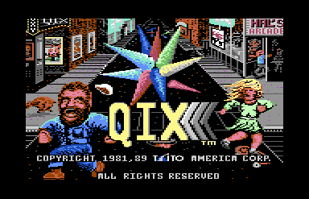
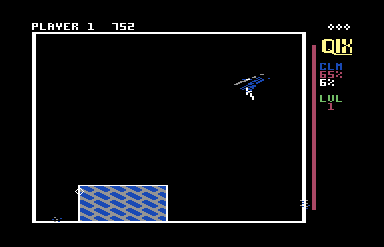
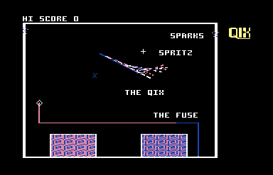
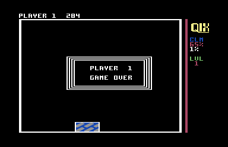

<meta charset="utf-8">
<meta name="viewport" content="width=device-width, initial-scale=1">
<title>Qix</title>
<link rel="preconnect" href="https://fonts.googleapis.com">
<link rel="stylesheet" href="https://fonts.googleapis.com/css2?family=Lato:wght@400;700;900&family=IBM+Plex+Mono:wght@400;500&display=swap">
<style>
:root{
  --bg:#23262d; --paper:#e9e7e1; --surface:#ffffff; --surface-2:#f1efea; --line:#d5d3cc; --line-soft:#e0ded8;
  --ink:#2f3136; --ink-soft:#55585f; --ink-mute:#80838a;
  --link:#1f5fa8; --link-hover:#154480; --accent:#1f5fa8;
  --amber:#c25a00; --cyan:#1f5fa8; --coral:#d04a3a; --green:#2a8a4a; --violet:#4a5bd6; --hl:#fff0c2;
  --chip:#2f3136; --chip-ink:#ffffff;
  --c64blue:#40318d; --c64grey:#686868;
  --fd:'Lato',system-ui,sans-serif; --fb:'Lato',system-ui,sans-serif; --fm:'IBM Plex Mono',ui-monospace,Menlo,monospace;
  --col:1080px; --gx:68px; --fs:17px; --lh:1.6; --hw:900; --h1:46px; --h2:26px; --sy:48px; --pp:26px; --r:10px;
  --plate-shadow:0 1px 2px rgba(0,0,0,.05),0 4px 14px rgba(0,0,0,.05);
}
*{box-sizing:border-box}
html{background:var(--bg);min-height:100%}
body{background:var(--paper);color:var(--ink);font-family:var(--fb);font-size:var(--fs);line-height:var(--lh);max-width:var(--col);margin:0 auto;min-height:100vh;padding:0 0 4rem}
h1,h2,h3{font-weight:var(--hw);letter-spacing:-.01em;text-wrap:balance;color:var(--ink);margin:0}
.wrap{padding:0 var(--gx)}
.hero{padding:48px var(--gx) 8px;text-align:left}
.eyebrow{font-family:var(--fm);font-size:12px;letter-spacing:.08em;text-transform:uppercase;color:var(--ink-mute);margin:0 0 10px}
.hero h1{font-size:var(--h1);line-height:1.15;letter-spacing:-.02em;margin:0 0 14px}
.hero .sub{margin:0 0 .6em;color:var(--ink-soft)}
section{padding:var(--sy) 0 24px}
section:last-of-type{border-bottom:none}
.fig{font-family:var(--fm);font-size:12px;letter-spacing:.08em;text-transform:uppercase;color:var(--ink-mute);margin:0 0 10px}
h2.t{font-size:var(--h2);margin-bottom:12px}
.lede{color:var(--ink-soft);margin:0 0 30px}
.plate{background:var(--surface);border:1px solid var(--line);border-radius:var(--r);padding:var(--pp);box-shadow:var(--plate-shadow)}
.cap{font-size:14px;color:var(--ink-mute);margin-top:14px;line-height:1.55}
.cap b{color:var(--ink);font-weight:700}
code{font-family:var(--fm);font-size:.82em;background:var(--chip);color:var(--chip-ink);border-radius:4px;padding:2px 6px;white-space:nowrap}
.qx-pair{display:flex;gap:18px;flex-wrap:wrap}
.qx-pair figure{margin:0;flex:1 1 300px}
.qx-pair img,.qx-cv{width:100%;image-rendering:pixelated;border-radius:4px;display:block}
.qx-ctl{display:flex;gap:10px;flex-wrap:wrap;align-items:center;margin:0 0 14px;font-size:15px}
.qx-ctl button,.qx-ctl select{font:inherit;font-size:14px;padding:5px 12px;border:1px solid var(--line);border-radius:6px;background:var(--surface-2);cursor:pointer}
.qx-ctl button[aria-pressed=true]{background:var(--ink);color:#fff;border-color:var(--ink)}
.qx-ctl input[type=number]{font:inherit;width:7em;padding:4px 8px;border:1px solid var(--line);border-radius:6px}
.qx-key{display:flex;gap:16px;flex-wrap:wrap;font-size:14px;color:var(--ink-soft);margin-top:10px}
.qx-key i{display:inline-block;width:12px;height:12px;border-radius:2px;margin-right:6px;vertical-align:-1px}
.qx-tab{border-collapse:collapse;width:100%;font-size:14px}
.qx-tab th,.qx-tab td{border-bottom:1px solid var(--line-soft);padding:6px 8px;text-align:left;vertical-align:top}
.qx-tab th{font-weight:700;color:var(--ink-soft)}
.qx-tab td.qx-on{background:var(--hl)}
.qx-out{font-family:var(--fm);font-size:15px}
.qx-out b{font-size:20px}
.qx-miss{font-size:14px;color:var(--coral)}
.qx-scroll{overflow-x:auto}
.qm-wrap{display:flex;gap:18px;flex-wrap:wrap;align-items:flex-start}
.qm-cv{flex:2 1 320px;max-width:560px;background:#000}
.qm-side{flex:1 1 220px;min-width:0}
.qm-read{color:var(--ink);font-family:var(--fm);font-size:13px;line-height:1.5;margin:0 0 10px;padding:10px 12px;background:var(--surface-2);border-radius:6px;white-space:pre-wrap}
.qm-log{font-family:var(--fm);font-size:12px;line-height:1.45;color:var(--ink-soft);margin:0;padding:0;list-style:none;max-height:220px;overflow:auto}
.qm-log li{margin:0 0 4px}
.qm-log b{color:var(--ink-mute);font-weight:400}
.qm-log li.qm-k{color:var(--coral);font-weight:500}
.qm-log li.qm-f{color:var(--amber)}
@media (max-width:640px){:root{--gx:18px;--h1:36px;--pp:16px}}
</style>
<!-- tabs -->
<header class="hero">
  <p class="eyebrow">1989 · Taito America</p>
  <h1>Qix</h1>
  <p class="sub">The C64 Qix keeps its whole playfield three times over and tells the walls from the line you are drawing by colour alone. Its music player skips one frame in six on American machines, so the tunes play at the same speed everywhere.</p>
</header>
<main class="wrap">

<section>
  <p class="fig">01 · The game</p>
  <h2 class="t">Claim the screen, avoid the Qix</h2>
  <p class="lede">You steer a marker round the edge of an empty field. Holding fire takes it off the edge to draw a line; when the line reaches the edge again, the side without the Qix is filled in and becomes yours.</p>
  <div class="qx-pair">
    <figure><p class="cap">The title picture, a multicolour bitmap loaded with the game.</p></figure>
    <figure><p class="cap">Level 1 with 6 % claimed: the patterned block, the Qix (the blue lines), the Sparx on the edge, and the timer bar to the right.</p></figure>
  </div>
  <p>The Qix is a bundle of lines that wanders the open field. If it touches the line you are drawing, you lose a life. Sparx run along the edges and kill on contact; a Fuse burns along your line if you stop half way. A level ends when you have claimed the share the level asks for: 65 % at first, 80 % by level 9.</p>
  <p>A line drawn with fire held is a slow draw, and it scores twice as much as a fast one, drawn with fire released. Two Qix on one level can be split, by walling them into separate regions, for more points.</p>
</section>

<section>
  <p class="fig">02 · One frame, rebuilt from memory</p>
  <h2 class="t">The colour of a pixel says what it is</h2>
  <p class="lede">The play screen is a multicolour bitmap: 160 pixels across, each one of four colours. The game uses the colour as the map.</p>
  <div class="plate">
    <div class="qx-ctl"><button type="button" id="qx-v0" aria-pressed="true">The screen</button><button type="button" id="qx-v1" aria-pressed="false">What each pixel means</button></div>
    <canvas id="qx-frame" class="qx-cv" width="384" height="272"></canvas>
    <div class="qx-key" id="qx-key" hidden><span><i style="background:#2a8a4a"></i>colour 3: the edge, walls and the border</span><span><i style="background:#1f5fa8"></i>colour 1</span><span><i style="background:#d04a3a"></i>colour 2</span><span><i style="background:#e9e7e1"></i>colour 0: open field</span></div>
    <p class="cap">One frame of level 1 drawn by the site's renderer from the memory and register writes recorded in the emulator. 94,822 of its 94,848 pixels match the emulator's own picture; the 26 that differ are on the Qix's newest line, which the game draws while the beam is passing.</p>
  </div>
  <p>The game keeps three copies of the field. The one on screen is at <code>$2000</code>; two more at <code>$6000</code> and <code>$E000</code> hold the same picture for the game to read. Every routine that asks "what is here?" looks up one pixel in the <code>$E000</code> copy (<code>$8D10</code>) and compares it with the four masks at <code>$150B</code>: colour 3 is the edge the marker may walk, colour 1 the line being drawn, and colour 2 a line that kills.</p>
  <p>A slow draw and a fast draw differ only in that check. The marker moves one pixel a step; with fire held, the step is skipped on every other pass (<code>$991C</code>). Moving onto colour 2 is a death. Reaching colour 3 closes the line, which <code>$B243</code> then repaints as edge.</p>
</section>

<section>
  <p class="fig">03 · The music</p>
  <h2 class="t">Music: eleven tunes, one frame in six skipped</h2>
  <p class="lede">The game stores eleven three-voice tunes. The title plays the longest; the others are shuffled and one plays at the end of each level.</p>
  <div class="plate"><div id="qx-sid"></div>
    <p class="cap">The tunes played by the game's own music player: its bytes from <code>$E000</code>, run once a frame on a small 6502 inside the page and heard through the site's model of the SID. Checked against the original code in a 6502 simulator: every register write of every frame of all eleven tunes, 14,159 frames, matches. The player reads three zero-page bytes before it writes them, so the first frame of a tune depends on what the game left there; the page starts from the title's values.</p></div>
  <p>The player is a copy: the game loads it at <code>$4000</code> and copies the 8,000 bytes to <code>$E000</code> before the title and before each level's end tune (<code>$884C</code>). Play reuses <code>$E000</code> as one of its three planes, so the music has to be put back each time.</p>
  <p>The interrupt calls the player 60 times a second on an American NTSC machine and 50 times on a European PAL one. To keep the tempo the same, the start-up checks which machine it is on and patches two bytes of the player before the copy (<code>$8030</code>). On NTSC they make the player count six frames and skip one; on PAL the count never skips. Each voice reads a stream of notes and 21 commands (repeats, calls, jumps, transposition, waveform, filter, vibrato and sweeps), dispatched through a table per voice (<code>$ED2B</code>).</p>
  <p>The Internet Archive's recording of this music credits Tim Follin. Nothing in the program names a composer.</p>
</section>

<section>
  <p class="fig">04 · Scoring</p>
  <h2 class="t">Bug: splitting the Qix does not double the score</h2>
  <p class="lede">The manual says splitting two Qix multiplies the points for every fill after it. The code doubles only the low byte.</p>
  <div class="plate">
    <div class="qx-ctl"><label>Pixels filled <input type="number" id="qx-area" value="4000" min="0" max="65535"></label>
      <button type="button" id="qx-slow" aria-pressed="true">Slow</button><button type="button" id="qx-fast" aria-pressed="false">Fast</button>
      <label>Splits so far <select id="qx-splits"><option>0</option><option selected>1</option><option>2</option><option>3</option></select></label></div>
    <p class="qx-out" id="qx-score"></p>
    <p class="cap">The arithmetic of <code>$8E60</code>, ported and checked against the game's own routine in a 6502 simulator over 3,150 cases (areas from 0 to 65,535, slow and fast, 0 to 4 splits): every result matches.</p>
  </div>
  <p>A fill is worth half its area in pixels, doubled for a slow line (<code>$8E60</code>). A line counts as fast when it ends with fire released. Each time a player splits the Qix, a counter goes up, and it stays up for the rest of the game. The score routine doubles the points once for each split, with a loop that adds the low byte to itself and carries into the high byte without doubling it. Below 256 points the doubling is right; above, most of the bonus is lost. A 4,000-pixel slow fill after one split scores 4,160 where it should score 8,000, and after two splits 4,224 where it should score 16,000.</p>
  <p>When a level ends, the claim over the requirement earns 1,000 points a percent (<code>$8E13</code>). The claimed percentage is the high byte of the player's claimed pixel count, so one percent is 256 pixels of a field about 25,000 pixels inside.</p>
</section>

<section>
  <p class="fig">05 · Progression</p>
  <h2 class="t">Each level is a row of one table</h2>
  <p class="lede">Fourteen settings per level, in tables at <code>$1181</code>: the claim needed, how many Qix, when each enemy appears, how hard the Qix leans towards you.</p>
  <div class="plate">
    <div class="qx-ctl"><label>Level <select id="qx-lvl"></select></label></div>
    <div class="qx-scroll"><table class="qx-tab" id="qx-ltab"></table></div>
    <p class="cap">Read from the level tables at <code>$1181</code>-<code>$121A</code> by <code>$9061</code>. From level 12 on the game alternates the settings of levels 10 and 11.</p>
  </div>
  <p>The table explains how the difficulty climbs. Levels 3 and 4 bring a second Qix and Sparx that chase you up your line. Level 5 asks for 70 % and lets a pair of creatures loose in the open field. From level 7 the Qix pulls twice as hard towards the side of the screen you are on, and the timer bar may run out only once before every Sparx is out.</p>
  <p>The game prepares the player for both changes. At the end of level 2 it shows "SPLITTING QIXS MULTIPLIES POINTS", and at the end of level 4 "CAPTURE SPRITZ FOR EXTRA POINTS" (<code>$1786</code>).</p>
</section>

<section>
  <p class="fig">06 · The enemies</p>
  <h2 class="t">Sparx follow the edge towards the Qix</h2>
  <p class="lede">Every enemy is a sprite, and each kind moves by its own rule.</p>
  <table class="qx-tab">
    <tr><th>Enemy</th><th>Sprites</th><th>How it moves</th><th>Where</th></tr>
    <tr><td>The Qix</td><td>none: lines in the bitmap</td><td>Two ends, each with a speed across and down. Every few steps each speed may reverse at random; at a wall it reverses with a pull towards the marker. The last eight lines stay on screen as a trail (sections 07-09).</td><td><code>$946A</code></td></tr>
    <tr><td>Sparx</td><td>2-7, in three pairs</td><td>Walk the edge pixel by pixel, one each way round; at a junction they take the branch nearer the Qix. They start halfway round the edge from the marker.</td><td><code>$A1C0</code>, <code>$9F1D</code></td></tr>
    <tr><td>Chasing Sparx</td><td>4-5</td><td>From level 3, once they reach the corner where your line left the edge, they follow the line itself.</td><td><code>$B200</code></td></tr>
    <tr><td>The Fuse</td><td>1</td><td>Appears when the marker stops while drawing, runs along the line from its start, and burns the line behind it into the killing colour.</td><td><code>$8AC4</code>, <code>$AFD3</code></td></tr>
    <tr><td>Spritz</td><td>2-3, from level 7 also 6-7</td><td>Start at the middle of a Qix's line and fly diagonally through the open field, turning by a table of 28 wall patterns. One that is walled in all round makes every later line score as slow, until you die.</td><td><code>$9B3A</code>, <code>$9D47</code></td></tr>
  </table>
  <p>The Sparx are released by the timer bar to the right of the field. It shortens from both ends, a pixel row at a time; each time the ends meet, the count of runs goes up and the bar is drawn full again (<code>$85FD</code>). Each pair of Sparx has a run count of its own in the level table.</p>
</section>

<section>
  <p class="fig">07 · The Qix</p>
  <h2 class="t">The Qix is two bouncing points that turn back at random</h2>
  <p class="lede">The Qix has no path to follow and no target. Its line joins two points, each with a speed across and a speed down, and every few steps a random draw sends most of those speeds the other way.</p>
  <p>Once a pass of the main loop, about 14 times a second, the game moves the Qix one step (<code>$946A</code>). The step erases the oldest of the eight lines on screen, moves the two ends, checks the new line against the claimed edges, and draws it. On the levels with two Qix the step serves them in turn, so each moves half as often. Both start each life on the same short line in the middle.</p>
  <p>A speed is a signed byte: 3 or 4 pixels across, or 4 or 5 lines up or down. The game never changes a speed by a little. Every change draws a new size and flips the sign, because the routine that makes the new speed takes the old one's sign as its input (<code>$A555</code>). These are the only moments a speed changes:</p>
  <div class="qx-scroll"><table class="qx-tab">
    <tr><th>When</th><th>What the game does</th><th>Where</th></tr>
    <tr><td>The turn timer runs out</td><td>Draws a new timer, then reverses each of the four speeds with a chance of three in four. No pull.</td><td><code>$94C4</code></td></tr>
    <tr><td>An end would leave the box two pixels inside the field</td><td>Reverses that speed and adds the pull towards the marker. The end stays put for this step.</td><td><code>$92AD</code></td></tr>
    <tr><td>The second end is 30 or more from the first, across or down</td><td>Moves the second end 5 towards the first until it is closer. The Qix never spans more than 29 either way.</td><td><code>$9313</code></td></tr>
    <tr><td>An end's move crosses a claimed edge</td><td>Tests the move across and the move down on their own, and reverses each one that crosses, as at a wall.</td><td><code>$96CA</code></td></tr>
    <tr><td>The new line itself still crosses a claimed edge</td><td>Puts the Qix back on the oldest line of its trail and clears the timer (section 09).</td><td><code>$9774</code></td></tr>
    <tr><td>After every step</td><td>Chooses the pull for the next bounce on each axis: towards the marker, from where the first end now is.</td><td><code>$954F</code></td></tr>
  </table></div>
  <p class="cap">A bounce also draws a new turn time, but stores it at <code>$0273</code>, which nothing reads. In 1,600 steps watched in the emulator, nothing did. A bounce leaves the turn timer running as it was.</p>
  <p class="cap"><b>Bug:</b> Qix 2 has its own copy of the edge test, and one line of the copy reads Qix 1's height (<code>$982F</code>). When the game tests Qix 2's second end moving across on its own, it tests a line to that end's new position across but at Qix 1's height. So Qix 2 can bounce off an edge its move would not have crossed, or miss one it would. A replay of a two-Qix recording with the line read correctly drifts from the game after 288 steps; with the slip kept, all 400 steps match.</p>
  <p>The turn timer is what changes most between levels. The game draws a random byte and keeps it when it falls between <code>$20</code> and <code>$3E</code>, about one draw in eight; any other value is cut to 0-3. The level's mask (<code>$6F</code>) then caps the result. On level 1 the mask is 3, so the Qix turns every one to four steps and shivers about the middle of the field. From level 2 the one draw in eight lets the Qix run straight across the field.</p>
  <div class="qx-scroll"><table class="qx-tab">
    <tr><th>Levels</th><th>Steps between turns</th><th>Pull added at a bounce</th></tr>
    <tr><td>1</td><td>1-4</td><td>none</td></tr>
    <tr><td>3</td><td>1-4; one turn in eight, 1-8</td><td>none</td></tr>
    <tr><td>2, 4, 5, 6</td><td>1-4; one turn in eight, 1-31</td><td>1</td></tr>
    <tr><td>7 and later</td><td>1-4; one turn in eight, 33-48</td><td>2</td></tr>
  </table></div>
  <p>The pull is all the hunting the Qix does, and it works only at a bounce. The pull is added to the new speed on that axis, towards the marker. On level 7 a Qix that bounces off the far wall comes back towards you at up to 7 lines a step, and one that bounces off a wall on your side leaves at 2 or 3. In open field the Qix never steers.</p>
  <div class="plate">
    <div class="qx-ctl">
      <button type="button" id="qm-run" aria-pressed="false">Run</button><button type="button" id="qm-step">Step</button>
      <button type="button" id="qm-slow" aria-pressed="false">Slow</button>
      <label>Level <select id="qm-lvl"></select></label>
      <label>Field <select id="qm-field"><option value="open">Open</option><option value="corner">A claimed corner</option><option value="pen">A peninsula</option></select></label>
      <button type="button" id="qm-line" aria-pressed="false">Your line</button><button type="button" id="qm-old" aria-pressed="false">Show the oldest line</button>
      <button type="button" id="qm-reset">Reset</button>
    </div>
    <div class="qm-wrap"><canvas id="qm-cv" class="qx-cv qm-cv" width="280" height="200" aria-label="The Qix moving in the field"></canvas>
      <div class="qm-side"><pre class="qm-read" id="qm-read"></pre><ul class="qm-log" id="qm-log" aria-live="off"></ul></div></div>
    <p class="cap"><b>The viewer runs the game's own rules.</b> It is a port of the Qix's step and the line routine it uses for every test and every pixel, down to the order of the random draws. Given the random numbers the game drew, it repeats 1,000 steps of one Qix and 400 of two, recorded in the emulator, exactly, in an open field and in fields with claimed corners. Levels 3, 4, 6, 8, 9 and 11 bring a second Qix, as in the game. Click the field to move the marker; the pull points at it. <b>Your line</b> lays a line being drawn up from the marker. The Qix colours are those of the frame in section 02.</p>
  </div>
</section>

<section>
  <p class="fig">08 · The trail</p>
  <h2 class="t">Secret: the Qix's whole trail can kill you, up to eight steps late</h2>
  <p>The Qix on screen is eight lines, the newest and the seven before it, kept in tables of ten slots, of which the game uses eight (<code>$021E</code>). The game draws a new line and erases the oldest with one pixel routine (<code>$AD64</code>). That routine checks every pixel against the line you are drawing, whether it is drawing or erasing. So the newest line kills when it is drawn across your line, and the oldest kills when it is erased from under it.</p>
  <p>A line you draw across the middle of the trail is safe for a moment. The old Qix line it crossed is still on screen, and nothing checks it again until it becomes the oldest. Then the step that erases that line takes your life, up to seven steps, half a second, after you crossed it. In the emulator, a pixel of a line being drawn was placed under trail lines of different ages, six times. Five of the six kills came from the erase.</p>
  <p>The erase clears every pixel of the old line, including the pixels where newer lines cross it, so the trail on screen has small gaps. Drawing a line over a Qix pixel flips the pixel's colour bits instead of setting them, so crossings change colour.</p>
</section>

<section>
  <p class="fig">09 · The fallback</p>
  <h2 class="t">Secret: a cornered Qix jumps back to where it was eight steps ago</h2>
  <p>The edge tests check each end's move. They cannot see the line between the two new ends, which can cross a claimed corner when the open field is not a rectangle. The game tests that line last (<code>$9774</code>). When it crosses, the game gives up on the step and puts the Qix on the line in the trail slot it is about to overwrite: the oldest line, the one it erased at the start of this step. The timer is cleared, so the Qix turns on the next step.</p>
  <p>On screen the Qix jumps back to where it was eight steps before. In the emulator, a peninsula of claimed edge was added to the field; in 500 steps the Qix fell back five times, and each time it landed on its line from exactly eight steps earlier. Choose <b>A peninsula</b> or <b>A claimed corner</b> in the viewer above and watch the log for it.</p>
</section>

<section>
  <p class="fig">10 · Controls</p>
  <h2 class="t">Either joystick port works</h2>
  <p>The stick is read once a frame by the interrupt (<code>$83DF</code>), from both ports at once: the two port registers are combined with an exclusive OR, so a stick plugged into either port moves the marker. A diagonal is ignored in favour of the last straight direction, so the marker never cuts a corner. RUN/STOP pauses the game, and any stick movement resumes it (<code>$81D9</code>). RESTORE does nothing: the game points the NMI at a bare return.</p>
</section>

<section>
  <p class="fig">11 · Loading</p>
  <h2 class="t">Secret: the game reloads itself after every game</h2>
  <p>Play uses almost all of memory: the three copies of the field, the music's space at <code>$E000</code> and the title's code. So when a game ends, the C64 loads the whole program again from disk (<code>$1B97</code>). The attract demonstration, which plays a game by itself after the title tune, loads the title picture back (<code>$C2E0</code>), and every level end loads a 134-byte file called TAITO that nothing then runs (<code>$1A8D</code>). Each load comes with three tries and a "DRIVE ERROR / CHECK THE DISK" screen.</p>
  <div class="qx-pair">
    <figure><p class="cap">The attract demonstration, driving the real game engine with scripted input and naming each enemy as it appears.</p></figure>
    <figure><p class="cap">Game over: next comes a load of the whole game.</p></figure>
  </div>
</section>

</main>
<footer style="margin:16px 0 0;padding:22px var(--gx) 0;border-top:1px solid #e0ded8;font-family:'IBM Plex Mono',ui-monospace,Menlo,monospace;font-size:12px;color:#80838a"><a href="https://github.com/gamesexplained/gamesexplained" aria-label="GitHub" style="display:inline-flex;align-items:center;justify-content:center;width:26px;height:26px;margin-left:8px;border:1px solid #e0ded8;border-radius:7px;background:#ffffff;color:#80838a;vertical-align:middle"><svg width="15" height="15" viewBox="0 0 24 24" fill="currentColor" aria-hidden="true"><path d="M12 .297c-6.63 0-12 5.373-12 12 0 5.303 3.438 9.8 8.205 11.385.6.113.82-.258.82-.577 0-.285-.01-1.04-.015-2.04-3.338.724-4.042-1.61-4.042-1.61C4.422 18.07 3.633 17.7 3.633 17.7c-1.087-.744.084-.729.084-.729 1.205.084 1.838 1.236 1.838 1.236 1.07 1.835 2.809 1.305 3.495.998.108-.776.417-1.305.76-1.605-2.665-.3-5.466-1.332-5.466-5.93 0-1.31.465-2.38 1.235-3.22-.135-.303-.54-1.523.105-3.176 0 0 1.005-.322 3.3 1.23.96-.267 1.98-.399 3-.405 1.02.006 2.04.138 3 .405 2.28-1.552 3.285-1.23 3.285-1.23.645 1.653.24 2.873.12 3.176.765.84 1.23 1.91 1.23 3.22 0 4.61-2.805 5.625-5.475 5.92.42.36.81 1.096.81 2.22 0 1.606-.015 2.896-.015 3.286 0 .315.21.69.825.57C20.565 22.092 24 17.592 24 12.297c0-6.627-5.373-12-12-12"/></svg></a><a href="https://discord.gg/3V9GWyRDWV" aria-label="Discord" style="display:inline-flex;align-items:center;justify-content:center;width:26px;height:26px;margin-left:8px;border:1px solid #e0ded8;border-radius:7px;background:#ffffff;color:#80838a;vertical-align:middle"><svg width="15" height="15" viewBox="0 0 24 24" fill="currentColor" aria-hidden="true"><path d="M20.317 4.3698a19.7913 19.7913 0 00-4.8851-1.5152.0741.0741 0 00-.0785.0371c-.211.3753-.4447.8648-.6083 1.2495-1.8447-.2762-3.68-.2762-5.4868 0-.1636-.3933-.4058-.8742-.6177-1.2495a.077.077 0 00-.0785-.037 19.7363 19.7363 0 00-4.8852 1.515.0699.0699 0 00-.0321.0277C.5334 9.0458-.319 13.5799.0992 18.0578a.0824.0824 0 00.0312.0561c2.0528 1.5076 4.0413 2.4228 5.9929 3.0294a.0777.0777 0 00.0842-.0276c.4616-.6304.8731-1.2952 1.226-1.9942a.076.076 0 00-.0416-.1057c-.6528-.2476-1.2743-.5495-1.8722-.8923a.077.077 0 01-.0076-.1277c.1258-.0943.2517-.1923.3718-.2914a.0743.0743 0 01.0776-.0105c3.9278 1.7933 8.18 1.7933 12.0614 0a.0739.0739 0 01.0785.0095c.1202.099.246.1981.3728.2924a.077.077 0 01-.0066.1276 12.2986 12.2986 0 01-1.873.8914.0766.0766 0 00-.0407.1067c.3604.698.7719 1.3628 1.225 1.9932a.076.076 0 00.0842.0286c1.961-.6067 3.9495-1.5219 6.0023-3.0294a.077.077 0 00.0313-.0552c.5004-5.177-.8382-9.6739-3.5485-13.6604a.061.061 0 00-.0312-.0286zM8.02 15.3312c-1.1825 0-2.1569-1.0857-2.1569-2.419 0-1.3332.9555-2.4189 2.157-2.4189 1.2108 0 2.1757 1.0952 2.1568 2.419 0 1.3332-.9555 2.4189-2.1569 2.4189zm7.9748 0c-1.1825 0-2.1569-1.0857-2.1569-2.419 0-1.3332.9554-2.4189 2.1569-2.4189 1.2108 0 2.1757 1.0952 2.1568 2.419 0 1.3332-.946 2.4189-2.1568 2.4189Z"/></svg></a><br>© Games Explained contributors. Write-ups, facts and symbol maps are available under <a href="https://creativecommons.org/licenses/by-sa/4.0/" style="color:#1f5fa8;text-decoration:none">CC BY-SA 4.0</a>; code under <a href="https://opensource.org/licenses/MIT" style="color:#1f5fa8;text-decoration:none">MIT</a></footer>
<script src="../../lib/c64.js"></script>
<script src="../../lib/sid.js"></script>
<script>
// createDriver for C64Sid: runs Qix's own music player (its bytes from $E000) on a small 6502 core.
function createDriver(D) {
  'use strict';
  const m = new Uint8Array(0x10000);
  for (let i = 0; i < D.hex.length / 2; i++) m[D.base + i] = parseInt(D.hex.substr(2 * i, 2), 16);
  if (D.zp) for (let i = 0; i < 16; i++) m[0xF0 + i] = parseInt(D.zp.substr(2 * i, 2), 16);
  const sid = new Uint8Array(25);
  let writes = [], bus = 0, env3 = 0, osc3 = 0, on = false;
  let a = 0, x = 0, y = 0, sp = 0xFF, pc = 0, n = 0, v = 0, z = 0, c = 0, d = 0;
  const rd = (ad) => {
    if (ad >= 0xD400 && ad < 0xD800) { const r = ad & 0x1F; return r === 0x1B ? osc3 : r === 0x1C ? env3 : bus; }
    return m[ad];
  };
  const wr = (ad, val) => {
    if (ad >= 0xD400 && ad < 0xD800) { const r = ad & 0x1F; if (r < 25) { sid[r] = val; writes.push(r, val); } bus = val; return; }
    m[ad] = val;
  };
  const nz = (r) => { n = r & 0x80; z = r === 0 ? 1 : 0; return r; };
  const push = (b) => { m[0x100 + sp] = b; sp = (sp - 1) & 255; };
  const pull = () => { sp = (sp + 1) & 255; return m[0x100 + sp]; };
  const flags = () => (n ? 0x80 : 0) | (v ? 0x40 : 0) | 0x30 | (d ? 8 : 0) | 4 | (z ? 2 : 0) | (c ? 1 : 0);
  const setf = (p) => { n = p & 0x80; v = p & 0x40; d = p & 8; z = p & 2; c = p & 1; };
  const adc = (b) => {
    if (d) { let lo = (a & 15) + (b & 15) + (c ? 1 : 0); let hi = (a >> 4) + (b >> 4); if (lo > 9) { lo += 6; hi++; }
      z = ((a + b + (c ? 1 : 0)) & 255) === 0 ? 1 : 0; n = (hi << 4) & 0x80; v = (~(a ^ b) & (a ^ (hi << 4)) & 0x80);
      if (hi > 9) hi += 6; c = hi > 15 ? 1 : 0; a = ((hi << 4) | (lo & 15)) & 255; return; }
    const s = a + b + (c ? 1 : 0); v = (~(a ^ b) & (a ^ s) & 0x80); c = s > 255 ? 1 : 0; a = nz(s & 255);
  };
  const sbc = (b) => {
    if (d) { const s = a - b - (c ? 0 : 1); let lo = (a & 15) - (b & 15) - (c ? 0 : 1); let hi = (a >> 4) - (b >> 4);
      if (lo & 16) { lo -= 6; hi--; } if (hi & 16) hi -= 6; v = ((a ^ b) & (a ^ s) & 0x80); c = s >= 0 ? 1 : 0; nz(s & 255);
      a = ((hi << 4) | (lo & 15)) & 255; return; }
    adc(b ^ 255);
  };
  const cmp = (r, b) => { const s = r - b; c = s >= 0 ? 1 : 0; nz(s & 255); };
  function step() {
    const op = m[pc], b1 = m[(pc + 1) & 0xFFFF], b2 = m[(pc + 2) & 0xFFFF], w = b1 | b2 << 8;
    const zpx = (b1 + x) & 255, zpy = (b1 + y) & 255;
    const izx = m[zpx] | m[(zpx + 1) & 255] << 8, izy = ((m[b1] | m[(b1 + 1) & 255] << 8) + y) & 0xFFFF;
    const abx = (w + x) & 0xFFFF, aby = (w + y) & 0xFFFF;
    // addressing by the opcode's low bits, for the regular groups
    const g = op & 3, mode = (op >> 2) & 7;
    let ea = -1, len = 2;
    if (g === 1) { ea = [izx, b1, -2, w, izy, zpx, aby, abx][mode]; len = (mode === 3 || mode >= 6) ? 3 : 2; }
    else if (g === 2 || g === 0) { ea = [-2, b1, -2, w, -1, (op === 0x96 || op === 0xB6) ? zpy : zpx, -1, (op === 0xBE) ? aby : abx][mode]; len = (mode === 3 || mode === 7) ? 3 : 2; }
    const M = () => (ea === -2 ? b1 : rd(ea));
    switch (op) {
      // group 1: ORA AND EOR ADC STA LDA CMP SBC
      case 0x01: case 0x05: case 0x09: case 0x0D: case 0x11: case 0x15: case 0x19: case 0x1D: a = nz(a | M()); break;
      case 0x21: case 0x25: case 0x29: case 0x2D: case 0x31: case 0x35: case 0x39: case 0x3D: a = nz(a & M()); break;
      case 0x41: case 0x45: case 0x49: case 0x4D: case 0x51: case 0x55: case 0x59: case 0x5D: a = nz(a ^ M()); break;
      case 0x61: case 0x65: case 0x69: case 0x6D: case 0x71: case 0x75: case 0x79: case 0x7D: adc(M()); break;
      case 0x81: case 0x85: case 0x8D: case 0x91: case 0x95: case 0x99: case 0x9D: wr(ea, a); break;
      case 0xA1: case 0xA5: case 0xA9: case 0xAD: case 0xB1: case 0xB5: case 0xB9: case 0xBD: a = nz(M()); break;
      case 0xC1: case 0xC5: case 0xC9: case 0xCD: case 0xD1: case 0xD5: case 0xD9: case 0xDD: cmp(a, M()); break;
      case 0xE1: case 0xE5: case 0xE9: case 0xED: case 0xF1: case 0xF5: case 0xF9: case 0xFD: sbc(M()); break;
      // shifts and inc/dec on memory
      case 0x06: case 0x0E: case 0x16: case 0x1E: { const t = rd(ea); c = t >> 7; wr(ea, nz((t << 1) & 255)); break; }
      case 0x26: case 0x2E: case 0x36: case 0x3E: { const t = rd(ea); const r = ((t << 1) | (c ? 1 : 0)) & 255; c = t >> 7; wr(ea, nz(r)); break; }
      case 0x46: case 0x4E: case 0x56: case 0x5E: { const t = rd(ea); c = t & 1; wr(ea, nz(t >> 1)); break; }
      case 0x66: case 0x6E: case 0x76: case 0x7E: { const t = rd(ea); const r = (t >> 1) | (c ? 0x80 : 0); c = t & 1; wr(ea, nz(r)); break; }
      case 0xC6: case 0xCE: case 0xD6: case 0xDE: wr(ea, nz((rd(ea) - 1) & 255)); break;
      case 0xE6: case 0xEE: case 0xF6: case 0xFE: wr(ea, nz((rd(ea) + 1) & 255)); break;
      case 0x0A: c = a >> 7; a = nz((a << 1) & 255); len = 1; break;
      case 0x2A: { const r = ((a << 1) | (c ? 1 : 0)) & 255; c = a >> 7; a = nz(r); len = 1; break; }
      case 0x4A: c = a & 1; a = nz(a >> 1); len = 1; break;
      case 0x6A: { const r = (a >> 1) | (c ? 0x80 : 0); c = a & 1; a = nz(r); len = 1; break; }
      // loads, stores, compares with X and Y
      case 0xA2: case 0xA6: case 0xAE: case 0xB6: case 0xBE: x = nz(M()); break;
      case 0xA0: case 0xA4: case 0xAC: case 0xB4: case 0xBC: y = nz(M()); break;
      case 0x86: case 0x8E: case 0x96: wr(ea, x); break;
      case 0x84: case 0x8C: case 0x94: wr(ea, y); break;
      case 0xE0: case 0xE4: case 0xEC: cmp(x, M()); break;
      case 0xC0: case 0xC4: case 0xCC: cmp(y, M()); break;
      case 0x24: case 0x2C: { const t = rd(ea); n = t & 0x80; v = t & 0x40; z = (a & t) === 0 ? 1 : 0; break; }
      // implied
      case 0xAA: x = nz(a); len = 1; break; case 0xA8: y = nz(a); len = 1; break;
      case 0x8A: a = nz(x); len = 1; break; case 0x98: a = nz(y); len = 1; break;
      case 0xBA: x = nz(sp); len = 1; break; case 0x9A: sp = x; len = 1; break;
      case 0xE8: x = nz((x + 1) & 255); len = 1; break; case 0xCA: x = nz((x - 1) & 255); len = 1; break;
      case 0xC8: y = nz((y + 1) & 255); len = 1; break; case 0x88: y = nz((y - 1) & 255); len = 1; break;
      case 0x18: c = 0; len = 1; break; case 0x38: c = 1; len = 1; break;
      case 0x58: case 0x78: case 0xEA: len = 1; break;
      case 0xB8: v = 0; len = 1; break; case 0xD8: d = 0; len = 1; break; case 0xF8: d = 1; len = 1; break;
      case 0x48: push(a); len = 1; break; case 0x68: a = nz(pull()); len = 1; break;
      case 0x08: push(flags()); len = 1; break; case 0x28: setf(pull()); len = 1; break;
      // branches
      case 0x10: case 0x30: case 0x50: case 0x70: case 0x90: case 0xB0: case 0xD0: case 0xF0: {
        const f = [n, v, c, z][op >> 6], take = (op & 0x20) ? !!f : !f;
        pc = (pc + 2 + (take ? (b1 < 128 ? b1 : b1 - 256) : 0)) & 0xFFFF; return; }
      case 0x4C: pc = w; return;
      case 0x6C: pc = m[w] | m[(w & 0xFF00) | ((w + 1) & 255)] << 8; return;
      case 0x20: { const r = (pc + 2) & 0xFFFF; push(r >> 8); push(r & 255); pc = w; return; }
      case 0x60: { const lo = pull(); pc = ((pull() << 8 | lo) + 1) & 0xFFFF; return; }
      default: throw new Error('opcode $' + op.toString(16) + ' at $' + pc.toString(16));
    }
    pc = (pc + len) & 0xFFFF;
  }
  function call(entry, regs) {
    a = regs.a || 0; x = regs.x || 0; y = regs.y || 0; sp = 0xFD; m[0x1FF] = 0xFF; m[0x1FE] = 0xFE; pc = entry;
    for (let i = 0; i < 200000; i++) { if (pc === 0xFFFF) return; step(); }
    throw new Error('runaway at $' + pc.toString(16));
  }
  return {
    sid,
    get writes() { return writes; },
    readback(e3, o3, b) { env3 = e3; osc3 = o3; bus = b; },
    init(t) { writes = []; call(0xE000, { x: t }); on = true; },
    stop() { writes = []; call(0xE003, {}); on = false; },
    play() { writes = []; if (!on) return; call(0xE006, {}); if (a === 0) on = false; },
    playing() { return on; },
    voice(i) { return { at: m[0xF0 + 2 * i] | m[0xF1 + 2 * i] << 8 }; },
  };
}


</script>
<script>
// A port of the C64 Qix's movement: qix_step ($946A) for one Qix, with the routines it calls.
// Each method names the routine it follows. Coordinates are the game's: x in multicolour pixels
// (0-159), y in lines (0-199). Speeds, positions and biases are bytes, as in the game, so the
// arithmetic wraps the way the 6502's does.
class QixMover {
  // o: { rand(n) -> 0..n-1 (random_range), cls, live, bmp: Uint8Array(160*200) planes,
  //      field: [left, right, top, bottom] ($1575-$1578), level: [mask $6F, pull $6E, pull $6D],
  //      marker: [x, y] ($31, $32), consts: [trail $156B, speed $156C, step $156E, len $156F, len $1570] }
  constructor(o) {
    this.rand = o.rand;
    this.cls = o.cls; this.live = o.live; this.bmp = o.bmp;     // the $E000 plane, the $6000 plane, the bitmap
    const f = o.field || [1, 135, 10, 198];
    this.left = f[0] + 2; this.right = f[1] - 2; this.top = f[2] + 2; this.bottom = f[3] - 2;   // qix_limits
    const k = o.consts || [7, 2, 5, 15, 30];
    this.trailLen = k[0]; this.K = k[1]; this.lenStep = k[2]; this.lenA = k[3]; this.lenB = k[4];
    this.setLevel(o.level || [3, 0, 0]);
    this.marker = o.marker || [67, 198];
    this.tx1 = new Array(10).fill(0); this.ty1 = new Array(10).fill(0);
    this.tx2 = new Array(10).fill(0); this.ty2 = new Array(10).fill(0);
    this.idx = this.trailLen; this.timer = 0; this.b1 = 0; this.colour = 1; this.t73 = 0;
    this.x1 = 61; this.x2 = 71; this.y1 = 93; this.y2 = 103;
    this.sx1 = 3; this.sx2 = 0xFD; this.sy1 = 4; this.sy2 = 0xFC; this.biasX = 0; this.biasY = 0;
    this.events = []; this.kill = null;
    this.partner = o.partner || null;                              // set on Qix 2: Qix 1's mover
  }
  setLevel(l) { this.mask = l[0]; this.pullPos = l[1] & 255; this.pullNeg = l[2] & 255; }

  // qix_reset ($91DA): a short diagonal in the middle, an empty trail.
  reset() {
    this.idx = this.trailLen;
    for (let i = 0; i < 10; i++) this.tx1[i] = this.ty1[i] = this.tx2[i] = this.ty2[i] = 0;
    const cy = this.bottom >> 1, cx = this.right >> 1, t = this.idx;
    this.y1 = this.ty1[t] = cy - 5; this.x1 = this.tx1[t] = cx - 5;
    this.y2 = this.ty2[t] = cy + 5; this.x2 = this.tx2[t] = cx + 5;
  }

  random() { return this.rand(255); }                               // random ($A58D): LDA #$FF, random_range
  static adc(a, b, c) { const r = a + b + c; return [r & 255, r > 255 ? 1 : 0]; }
  static sbc(a, b, c) { const r = a - b - (1 - c); return [r & 255, r >= 0 ? 1 : 0]; }
  // negate_speed ($A555): carry is the old speed's sign, so the new speed always goes the other way.
  negateSpeed(old) {
    const r = this.rand(this.K);
    if (!(old & 0x80)) { let [a, c] = QixMover.sbc(r, this.K, 1); [a] = QixMover.sbc(a, 2, c); return a; }   // random_speed_neg
    let [a, c] = QixMover.adc(r, this.K, 0); [a] = QixMover.adc(a, 2, c); return a;                         // random_speed_pos
  }
  // random_speed1 ($A571): the same with a smaller magnitude, for x.
  speed1(old) {
    const r = this.rand(this.K);
    if (!(old & 0x80)) { let [a, c] = QixMover.sbc(r, this.K, 1); [a] = QixMover.sbc(a, 1, c); return a; }
    let [a, c] = QixMover.adc(r, this.K, 0); [a] = QixMover.adc(a, 1, c); return a;
  }
  newTurnTime() {                                                    // new_turn_time ($98DB): $0273, which nothing reads
    let r = this.random(); if (r >= 0x3F || r < 0x20) r &= 3; this.t73 = r; this.qixColour();
  }
  qixColour() { this.b1 = this.random() & 3; }                      // qix_colour ($98EB)
  inside(v, lo, hi) { return !(v < lo) && v < hi; }

  // qix1_move_y1 ($92AD) and its bounce at $92BB
  bounceY1() { this.sy1 = (this.negateSpeed(this.sy1) + this.biasY) & 255; this.newTurnTime(); this.ev(this.inCheck ? 'block' : 'wall', 'y1', this.biasY); }
  moveY1() { const v = (this.y1 + this.sy1) & 255; if (this.inside(v, this.top, this.bottom)) return v; this.bounceY1(); return this.y1; }
  // qix1_move_x1 ($92D0) and $92DE
  bounceX1() { this.sx1 = (this.speed1(this.sx1) + this.biasX) & 255; this.newTurnTime(); this.ev(this.inCheck ? 'block' : 'wall', 'x1', this.biasX); }
  moveX1() { const v = (this.x1 + this.sx1) & 255; if (this.inside(v, this.left, this.right)) return v; this.bounceX1(); return this.x1; }
  // the length limit at $9313: step the second end towards the first while they are 30 or more apart
  clamp(v, ref) {
    for (let guard = 0; guard < 64; guard++) {
      const d = (v - ref) & 255, c = v >= ref, m = c ? d : (-d) & 255;
      if (m < this.lenA || m < this.lenB) return v;
      v = c ? (v - this.lenStep) & 255 : (v + this.lenStep) & 255;
    }
    return v;
  }
  // qix1_move_y2 ($92F3), $9301
  bounceY2() { this.sy2 = (this.negateSpeed(this.sy2) + this.biasY) & 255; this.newTurnTime(); this.ev(this.inCheck ? 'block' : 'wall', 'y2', this.biasY); }
  moveY2() { let v = (this.y2 + this.sy2) & 255; if (!this.inside(v, this.top, this.bottom)) { this.bounceY2(); v = this.y2; } return this.clamp(v, this.D4); }
  // qix1_move_x2 ($933F), $934D
  bounceX2() { this.sx2 = (this.speed1(this.sx2) + this.biasX) & 255; this.newTurnTime(); this.ev(this.inCheck ? 'block' : 'wall', 'x2', this.biasX); }
  moveX2() { let v = (this.x2 + this.sx2) & 255; if (!this.inside(v, this.left, this.right)) { this.bounceX2(); v = this.x2; } return this.clamp(v, this.D3); }

  // line_start ($A5F4) and line_to ($A62C): the pixels the game's line routine visits, the start included.
  static linePixels(x0, y0, x1, y1) {
    const pts = [[x0, y0]], right = x1 >= x0, down = y1 > y0;
    const n46 = Math.abs(x1 - x0), n47 = (~Math.abs(y1 - y0)) & 255;
    let n48 = n46, r = n47 - n46, n4C = r & 255, n4D = r >= 0 ? 0x80 : 0, A = n47, x = x0, y = y0;
    for (let guard = 0; guard < 2048; guard++) {
      const s = A + n48 + 1; n48 = s & 255; let c = s > 255;
      n4C = (n4C + 1) & 255;
      if (n4C === 0) { const b = n4D & 0x80; n4D = (n4D << 1) & 255; if (b) break; c = false; }
      if (c) { x += right ? 1 : -1; A = n47; } else { y += down ? 1 : -1; A = n46; }
      pts.push([x, y]);
    }
    return pts;
  }
  // line_begin + line_to with pixel_op ($AD64) in test mode ($0286 bit 7): does the line touch a colour-3 pixel?
  test(x0, y0, x1, y1) {
    for (const [x, y] of QixMover.linePixels(x0, y0, x1, y1)) if (this.cls[y * 160 + x] === 3) return true;
    return false;
  }
  // pixel_op in plot or erase mode; either way a colour-1 pixel in the $6000 plane (the line being drawn) kills.
  paint(x0, y0, x1, y1, erase) {
    for (const [x, y] of QixMover.linePixels(x0, y0, x1, y1)) {
      const p = y * 160 + x;
      if (this.live && this.live[p] === 1 && !this.kill) this.kill = { how: erase ? 'erase' : 'draw', x, y };
      const c = this.cls[p];
      if (erase) { if (c === 2) { this.cls[p] = 0; this.bmp[p] = 0; } }
      else if (c === 0 || c === 2) { this.cls[p] = 2; this.bmp[p] ^= this.colour; }
    }
  }
  ev(kind, what, pull) { this.events.push([kind, what, pull]); }

  // qix1_check_line ($96CA)
  checkLine() {
    this.inCheck = true;
    if (this.test(this.x2, this.y2, this.D3, this.D4)) {
      if (this.test(this.x2, this.y2, this.D3, this.y1)) { this.bounceX1(); this.D3 = this.moveX1(); }
      if (this.test(this.x2, this.y2, this.x1, this.D4)) { this.bounceY1(); this.D4 = this.moveY1(); }
    }
    if (this.test(this.x1, this.y1, this.D5, this.D6)) {
      // Qix 2's copy of this test (qix2_check_line, $982F) reads Qix 1's y2 ($028A) instead of its own ($028E)
      const yAcross = this.partner ? this.partner.y2 : this.y2;
      if (this.test(this.x1, this.y1, this.D5, yAcross)) { this.bounceX2(); this.D5 = this.moveX2(); }
      if (this.test(this.x1, this.y1, this.x2, this.D6)) { this.bounceY2(); this.D6 = this.moveY2(); }
    }
    if (this.test(this.D3, this.D4, this.D5, this.D6)) {            // $9774: the whole new line still crosses
      this.newTurnTime();
      const t = this.idx;                                           // the trail's oldest line, erased this step
      this.D3 = this.tx1[t]; this.D5 = this.tx2[t]; this.D4 = this.ty1[t]; this.D6 = this.ty2[t];
      this.timer = 0; this.ev('fallback', '');
    }
    this.inCheck = false;
    this.paint(this.D3, this.D4, this.D5, this.D6, false);          // qix1_store_line, draw_qix_line
  }

  // qix_step ($946A), Qix 1
  step() {
    this.events = []; this.kill = null;
    let t = this.idx;
    if (this.ty1[t] && this.ty2[t] && this.tx1[t] && this.tx2[t]) this.paint(this.tx1[t], this.ty1[t], this.tx2[t], this.ty2[t], true);
    this.D3 = this.x1; this.D5 = this.x2; this.D4 = this.y1; this.D6 = this.y2;
    this.timer = (this.timer - 1) & 255;
    if (this.timer & 0x80) {
      let r = this.random(); if (r >= 0x3F || r < 0x20) r &= 3;
      this.timer = r & this.mask;
      const flips = [];
      if (this.random() >= 0x40) { this.sy1 = this.negateSpeed(this.sy1); flips.push('y1'); }
      if (this.random() >= 0x40) { this.sy2 = this.negateSpeed(this.sy2); flips.push('y2'); }
      if (this.random() >= 0x40) { this.sx1 = this.speed1(this.sx1); flips.push('x1'); }
      if (this.random() >= 0x40) { this.sx2 = this.speed1(this.sx2); flips.push('x2'); }
      this.ev('turn', flips.join(' '));
    }
    this.D4 = this.moveY1(); this.D6 = this.moveY2(); this.D3 = this.moveX1(); this.D5 = this.moveX2();
    this.qixColour(); this.colour = this.b1 || 1;                   // qix_pattern ($98C7): $00 is never used
    this.checkLine();
    t = this.idx;
    this.x1 = this.tx1[t] = this.D3; this.biasX = this.D3 < this.marker[0] ? this.pullPos : this.pullNeg;
    this.x2 = this.tx2[t] = this.D5;
    this.y1 = this.ty1[t] = this.D4; this.biasY = this.D4 < this.marker[1] ? this.pullPos : this.pullNeg;
    this.y2 = this.ty2[t] = this.D6;
    this.idx = this.idx - 1; if (this.idx < 0) this.idx = this.trailLen;
    return this.events;
  }
}


</script>
<script>
(function () {
'use strict';
const $ = (id) => document.getElementById(id);
const FRAME = {"schema":1,"standard":"NTSC","lines":263,"cycles":65,"about":"","vic":[60,208,0,0,0,0,0,0,28,221,38,238,0,0,0,0,16,59,12,213,0,49,216,0,25,126,241,0,48,0,255,255,240,240,240,240,240,252,241,241,241,241,241,241,241,241,241],"cia2":[67,63],"cpu":[47,53],"writes":[[58,44,53258,40],[70,65,53257,222],[72,22,2044,36],[72,30,2045,34],[3,1,53285,241],[3,9,53286,246],[3,19,2041,39],[3,51,2042,34],[3,59,2043,36],[4,16,2046,34],[4,24,2047,37]],"colour":"AQEBAQEBAQEBAQEBAQEBAQEBAQEBAQEBAQEBAQEBAQEBAQEBAQEBAQEBAQEBAQEBAQEBAQEBAQEBAQEBAQEBAQEBAQEBAQEBAQEBAQEBAQEBAQEBAQEBAQEBAQEBAQEBAQEBAQEBAQEBAQEBAQEBAQEBAQEBAQEBAQEBAQEBAQEBAQEBAQEBAQEBAQEBAQEBAQEBAQEBAQEBAQEBAQEBAQEBAQEBAQEBAQEBAQEBAQEBAQEBAQEBAQEBAQEBAQEBAQEBAQEBAQEBAQEBAQEBAQEBAQEBAQEBAQEBAQEBAQEBAQEBAQEBAQEBAQEBAQEBAQEBAQEBAQEBAQEBAQEBAQEBAQEBAQEBAQEBAQEBAQEBAQEBAQEBAQEBAQEBAQEBAQEBAQEBAQEBAQEBAQEBAQEBAQEBAQEBAQEBAQEBAQEBAQEBAQEBAQEBAQEBAQEBAQEBAQEBAQEBAQEBAQEBAQEBAQEBAQEBAQEBAQEBAQEBAQEBAQEBAQEBAQEBAQEBAQEBAQEBAQEBAQEBAQEBAQEBAQEBAQEBAQEBAQEBAQEBAQEBAQEBAQEBAQEBAQEBAQEBAQEBAQEBAQEBAQEBAQEBAQEBAQEBAQEBAQEBAQEBAQEBAQEBAQEBAQEBAQEBAQEBAQEBAQEBAQEBAQEBAQEBAQEBAQEBAQEBAQEBAQEBAQEBAQEBAQEBAQEBAQEBAQEBAQEBAQEBAQEBAQEBAQEBAQEBAQEBAQEBAQEBAQEBAQEBAQEBAQEBAQEBAQEBAQEBAQEBAQEBAQEBAQEBAQEBAQEBAQEBAQEBAQEBAQEBAQEBAQEBAQEBAQEBAQEBAQEBAQEBAQEBAQEBAQEBAQEBAQEBAQEBAQEBAQEBAQEBAQEBAQEBAQEBAQEBAQEBAQEBAQEBAQEBAQEBAQEBAQEBAQEBAQEBAQEBAQEBAQEBAQEBAQEBAQEBAQEBAQEBAQEBAQEBAQEBAQEBAQEBAQEBAQEBAQEBAQEBAQEBAQEBAQEBAQEBAQEBAQEBAQEBAQEBAQEBAQEBAQEBAQEBAQEBAQEBAQEBAQEBAQEBAQEBAQEBAQEBAQEBAQEBAQEBAQEBAQEBAQEBAQEBAQEBAQEBAQEBAQEBAQEBAQEBAQEBAQEBAQEBAQEBAQEBAQEBAQEBAQEBAQEBAQEBAQEBAQEBAQEBAQEBAQEBAQEBAQEBAQEBAQEBAQEBAQEBAQEBAQEBAQEBAQEBAQEBAQEBAQEBAQEBAQEBAQEBAQEBAQEBAQEBAQEBAQEBAQEBAQEBAQEBAQEBAQEBAQEBAQEBAQEBAQEBAQEBAQEBAQEBAQEBAQEBAQEBAQEBAQEBAQEBAQEBAQEBAQEBAQEBAQEBAQ==","ram":[{"a":1024,"b":"ISEhISEhISEhISEhISEhISHnEhISEhISEhISEhISEhISEhIgICEhIWxsbGxsbGxsbGxsbGxsbGxsbGxsbGxsbGxsbGxsbGxsbGxsInd3d3dsbGxsbGxsbGxsbGxsbGxsbGxsbGxsbGxsbGxsbGxsbGxsbCJ3d3d3bGxsbGxsbGxsbGxsbGxsbGxsbGxsbGxsbGxsbGxsbGxsbGwid3d3d2xsbGxsbGxsbGxsbGxsbGxsbGxsbGxsbGxsbGxsbGxsbGxsInd3d3dsbGxsbGxsbGxsbGxsbGxsbGxsbGxsbGxsbGxsbGxsbGxsbCJmZmZmbGxsbGxsbGxsbGxsbGxsbGxsbGxsbGxsbGxsbGxsbGxsbGwiIiIiImxsbGxsbGxsbGxsbGxsbGxsbGxsbGxsbGxsbGxsbGxsbGxsIhERERFsbGxsbGxsbGxsbGxsbGxsbGxsbGxsbGxsbGxsbGxsbGxsbCLo6OjobGxsbGxsbGxsbGxsbGxsbGxsbGxsbGxsbGxsbGxsbGxsbGwiVVVVVWxsbGxsbGxsbGxsbGxsbGxsbGxsbGxsbGxsbGxsbGxsbGxsIiIiIiJsbGxsbGxsbGxsbGxsbGxsbGxsbGxsbGxsbGxsbGxsbGxsbCLo6OjobGxsbGxsbGxsbGxsbGxsbGxsbGxsbGxsbGxsbGxsbGxsbGwi6Ojo6GxsbGxsbGxsbGxsbGxsbGxsbGxsbGxsbGxsbGxsbGxsbGxsIujo6OhsbGxsbGxsbGxsbGxsbGxsbGxsbGxsbGxsbGxsbGxsbGxsbCLo6OjobGxsbGxsbGxsbGxsbGxsbGxsbGxsbGxsbGxsbGxsbGxsbGwi6Ojo6GxsbGxsbGxsbGxsbGxsbGxsbGxsbGxsbGxsbGxsbGxsbGxsIujo6OhsbGxsbGxsbGxsbGxsbGxsbGxsbGxsbGxsbGxsbGxsbGxsbCLo6OjobGxsbGxsbGxsbGxsbGxsbGxsbGxsbGxsbGxsbGxsbGxsbGwi6Ojo6GxsbGxsbGxsbGxsbGxsbGxsbGxsbGxsbGxsbGxsbGxsbGxsIujo6OhsbGxsbGxsbGxsbGxsbGxsbGxsbGxsbGxsbGxsbGxsbGxsbCLo6OjobGxsbGxsbGxsbGxsbGxsbGxsbGxsbGxsbGxsbGxsbGxsbGwi6Ojo6GxsbGxsbGxsbGxsbGxsbGxsbGxsbGxsbGxsbGxsbGxsbGxsIujo6OhsbGxsbGxsbGxsbGxsbGxsbGxsbGxsbGxsbGxsbGxsbGxsbCLo6OjobGxsbGxsbGxsbGxsbGxsbGxsbGxsbGxsbGxsbGxsbGxsbGwi6Ojo6A=="},{"a":2040,"b":"IQ=="},{"a":2044,"b":"JSM="},{"a":2112,"b":"AAAAAAAAAAAAAAAAAAAAAAAAABAAACgAAEQAAIIAAREAAIIAAEQAACgAABAAAAAAAAAAAAAAAAAAAAAAAAAA"},{"a":2176,"b":"AAAAAAAAAAAAAAAAAAAAAEAAAAwAAMEAAAAAABAAAAwAAMAAAAAAAAQAAAAAAAAAAAAAAAAAAAAAAAAAAAAA"},{"a":2304,"b":"AAAAAAAAAAAAAAAAAAAAAAAAADEAAMAAAAQAAEMAAAAAAMwAAAAAABEAAAAAAAAAAAAAAAAAAAAAAAAAAAAA"},{"a":8192,"b":"qIiIqICAgACAgICAgICoAKCIiKiIiIgAiIiIqCAgIACogICggICoAKiIiKCIiIgAAAAAAAAAAACgICAgICCoAAAAAAAAAAAAAAAAAAAAAACoCAgICAgIAKiAgKgICKgAqAgIqICAqAAAAAAAAAAAAAAAAAAAAAAAAAAAAAAAAAAAAAAAAAAAAAAAAAAAAAAAAAAAAAAAAAAAAAAAAAAAAAAAAAAAAAAAAAAAAAAAAAAAAAAAAAAAAAAAAAAAAAAAAAAAAAAAAAAAAAAAAAAAAAAAAAAAAAAAAAAAAAAAAAAAAAAAAAAAAAAAAAAAAAAAAAAAAAAAAAAAAAAAAAAAAAAAAAAAAAAAAAAAAAAAAAAAAAAAAAAAAAAgIIiIICAAACAgiIggIAAAICCIiCAgAAAgIIiIICAAACAgiIggIAAA///w8PDw8AD//wAAAAAAAP//AAAAAAAA//8AAAAAAAD//wAAAAAAAP//AAAAAAAA//8AAAAAAAD//wAAAAAAAP//AAAAAAAA//8AAAAAAAD//wAAAAAAAP//AAAAAAAA//8AAAAAAAD//wAAAAAAAP//AAAAAAAA//8AAAAAAAD//wAAAAAAAP//AAAAAAAA//8AAAAAAAD//wAAAAAAAP//AAAAAAAA//8AAAAAAAD//wAAAAAAAP//AAAAAAAA//8AAAAAAAD//wAAAAAAAP//AAAAAAAA//8AAAAAAAD//wAAAAAAAP//AAAAAAAA//8AAAAAAAD//wAAAAAAAP//AAAAAAAA//8DAwMDAwDAwMDAwMDAAAAAAAAAAAAAAAAAAAAAAAAAAAAAAAAAAAAAAAAAAAAAAAAAAAAAAPDw8PDw8PDwAAAAAAAAAAAAAAAAAAAAAAAAAAAAAAAAAAAAAAAAAAAAAAAAAAAAAAAAAAAAAAAAAAAAAAAAAAAAAAAAAAAAAAAAAAAAAAAAAAAAAAAAAAAAAAAAAAAAAAAAAAAAAAAAAAAAAAAAAAAAAAAAAAAAAAAAAAAAAAAAAAAAAAAAAAAAAAAAAAAAAAAAAAAAAAAAAAAAAAAAAAAAAAAAAAAAAAAAAAAAAAAAAAAAAAAAAAAAAAAAAAAAAAAAAAAAAAAAAAAAAAAAAAAAAAAAAAAAAAAAAAAAAAAAAAAAAAAAAAAAAAAAAAAAAAAAAAAAAAAAAAAAAAAAAAAAAAAAAAAAAAMDAwMDAwMDwMDAwMDAwMAAAAAAAABQUAoqKCgoKCgooKgICAgICAiioqKioqCgoIKCgoKCiCiI8PDw8PDw8PAAAAAAAAAAAAAAAAAAAAAAAAAAAAAAAAAAAAAAAAAAAAAAAAAAAAAAAAAAAAAAAAAAAAAAAAAAAAAAAAAAAAAAAAAAAAAAAAAAAAAAAAAAAAAAAAAAAAAAAAAAAAAAAAAAAAAAAAAAAAAAAAAAAAAAAAAAAAAAAAAAAAAAAAAAAAAAAAAAAAAAAAAAAAAAAAAAAAAAAAAAAAAAAAAAAAAAAAAAAAAAAAAAAAAAAAAAAAAAAAAAAAAAAAAAAAAAAAAAAAAAAAAAAAAAAAAAAAAAAAAAAAAAAAAAAAAAAAAAAAAAAAAAAAAAAAAAAAAAAAAAAAAAAAAAAAAAAAAAAAAAAwMDAwMDAwPAwMDAwMDAwFBQUFBQUFBQKCgoKCoKAAAICIgoqKgKAqKioqKiogCqgoKCgoKCAKrw8PDw8PDw8AAAAAAAAAAAAAAAAAAAAAAAAAAAAAAAAAAAAAAAAAAAAAAAAAAAAAAAAAAAAAAAAAAAAAAAAAAAAAAAAAAAAAAAAAAAAAAAAAAAAAAAAAAAAAAAAAAAAAAAAAAAAAAAAAAAAAAAAAAAAAAAAAAAAAAAAAAAAAAAAAAAAAAAAAAAAAAAAAAAAAAAAAAAAAAAAAAAAAAAAAAAAAAAAAAAAAAAAAAAAAAAAAAAAAAAAAAAAAAAAAAAAAAAAAAAAAAAAAAAAAAAAAAAAAAAAAAAAAAAAAAAAAAAAAAAAAAAAAAAAAAAAAAAAAAAAAAAAAAAAAAAAAAAAAAAAAAAAAAAAAADAwMDAwMDA8DAwMDAwMDAUFBQUFBQUFAAAAAAAAAAAAAAAAAAAAAAAAAAAAAAAAAAAAAAAAAAAPDw8PDw8PDwAAAAAAAAAAAAAAAAAAAAAAAAAAAAAAAAAAAAAAAAAAAAAAAAAAAAAAAAAAAAAAAAAAAAAAAAAAAAAAAAAAAAAAAAAAAAAAAAAAAAAAAAAAAAAAAAAAAAAAAAAAAAAAAAAAAAAAAAAAAAAAAAAAAAAAAAAAAAAAAAAAAAAAAAAAAAAAAAAAAAAAAAAAAAAAAAAAAAAAAAAAAAAAAAAAAAAAAAAAAAAAAAAAAAAAAAAAAAAAAAAAAAAAAAAAAAAAAAAAAAAAAAAAAAAAAAAAAAAAAAAAAAAAAAAAAAAAAAAAAAAAAAAAAAAAAAAAAAAAAAAAAAAAAAAAAAAAAAAAAAAAMDAwMDAwMDwMDAwMDAwMBQUFBQUFBQUKiIgICAiKgAgICAgICAqACIqKiIiIiIAAAAAAAAAAAA8PDw8PDw8PAAAAAAAAAAAAAAAAAAAAAAAAAAAAAAAAAAAAAAAAAAAAAAAAAAAAAAAAAAAAAAAAAAAAAAAAAAAAAAAAAAAAAAAAAAAAAAAAAAAAAAAAAAAAAAAAAAAAAAAAAAAAAAAAAAAAAAAAAAAAAAAAAAAAAAAAAAAAAAAAAAAAAAAAAAAAAAAAAAAAAAAAAAAAAAAAAAAAAAAAAAAAAAAAAAAAAAAAAAAAAAAAAAAAAAAAAAAAAAAAAAAAAAAAAAAAAAAAAAAAAAAAAAAAAAAAAAAAAAAAAAAAACCoAAAAAKAAAQAAAAAAAAAAAAAAAAAAAAAAAAAAAAAAAAAAAAAAAAAAAAAwMDAwMDAwPAwMDAwMDAwFBQUFBQUFBQqICAqIiIqACogICoCAioAICICCCAiAgAAAAAAAAAAADw8PDw8PDw8AAAAAAAAAAAAAAAAAAAAAAAAAAAAAAAAAAAAAAAAAAAAAAAAAAAAAAAAAAAAAAAAAAAAAAAAAAAAAAAAAAAAAAAAAAAAAAAAAAAAAAAAAAAAAAAAAAAAAAAAAAAAAAAAAAAAAAAAAAAAAAAAAAAAAAAAAAAAAAAAAAAAAAAAAAAAAAAAAAAAAAAAAAAAAAAAAAAAAAAAAAAAAAAAAAAAAAAAAAAAAAAAAAAAAAAAAAAAAAAAAAAAAAAAAAAAAAAAAAAAAIKKAAAAAqogAAAAQQAAQUQVFAFURFFFFBAAAAAAAAAAAAAAAAAAAAAAAAAAAAAAAAAAAAAAAAAAAAAAAADAwMDAwMDA8DAwMDAwMDAUFBQUFBQUFCogICoiIioAICICCCAiAgAAAAAAAAAAAAAAAAAAAAAAPDw8PDw8PDwAAAAAAAAAAAAAAAAAAAAAAAAAAAAAAAAAAAAAAAAAAAAAAAAAAAAAAAAAAAAAAAAAAAAAAAAAAAAAAAAAAAAAAAAAAAAAAAAAAAAAAAAAAAAAAAAAAAAAAAAAAAAAAAAAAAAAAAAAAAAAAAAAAAAAAAAAAAAAAAAAAAAAAAAAAAAAAAAAAAAAAAAAAAAAAAAAAAAAAAAAAAAAAAAAAAAAAAAAAAAAAAAAAAAAAAAAAAAAAAAAAAAAAAAAAAAAAAAAAAAAAAAAAASRxMDAAIGFxBQQECwgDAwAAAAAAAAAAAAAAAAAAAAAAAAAAAAAAAAAAAAAAAAAAAAAAAAAAAAAAMDAwMDAwMDwMDAwMDAwMBQUFBQUFBQUAAAAAAAAAAAAAAAAAAAAAAAAAAAAAAAAAAAAAAAAAAA8PDw8PDw8PAAAAAAAAAAAAAAAAAAAAAAAAAAAAAAAAAAAAAAAAAAAAAAAAAAAAAAAAAAAAAAAAAAAAAAAAAAAAAAAAAAAAAAAAAAAAAAAAAAAAAAAAAAAAAAAAAAAAAAAAAAAAAAAAAAAAAAAAAAAAAAAAAAAAAAAAAAAAAAAAAAAAAAAAAAAAAAAAAAAAAAAAAAAAAAAAAAAAAAAAAAAAAAAAAAAAAAAAAAAAAAAAAAAAAAAAAAAAAAAAAAAAAAAAAAAAAAAAAAAAAAAAAAABBQQAAAAAAAMDwMDAwAAAAAAAAAAAAAAAAAAAAAAAAAAAAAAAAAAAAAAAAAAAAAAAAAAAAAAAAAAwMDAwMDAwPAwMDAwMDAwFBQUFBQUFBQgICAgICAqACIiIiIiIggAICAgICAgKgAAAAAAAAAAADw8PDw8PDw8AAAAAAAAAAAAAAAAAAAAAAAAAAAAAAAAAAAAAAAAAAAAAAAAAAAAAAAAAAAAAAAAAAAAAAAAAAAAAAAAAAAAAAAAAAAAAAAAAAAAAAAAAAAAAAAAAAAAAAAAAAAAAAAAAAAAAAAAAAAAAAAAAAAAAAAAAAAAAAAAAAAAAAAAAAAAAAAAAAAAAAAAAAAAAAAAAAAAAAAAAAAAAAAAAAAAAAAAAAAAAAAAAAAAAAAAAAAAAAAAAAAAAAAAAAAAAAAAAAAAAAAAAAAAAAAAAAAAAAAAAAAAAAAAAAAAAAAAAAAAAAAAAAAAAAAAAAAAAAAAAAAAAAAAAAAAAAAAAAAAAADAwMDAwMDA8DAwMDAwMDAUFBQUFBQUFAAAAAAAAAAAKAgICAgIKgAAAAAAAAAAAAAAAAAAAAAAPDw8PDw8PDwAAAAAAAAAAAAAAAAAAAAAAAAAAAAAAAAAAAAAAAAAAAAAAAAAAAAAAAAAAAAAAAAAAAAAAAAAAAAAAAAAAAAAAAAAAAAAAAAAAAAAAAAAAAAAAAAAAAAAAAAAAAAAAAAAAAAAAAAAAAAAAAAAAAAAAAAAAAAAAAAAAAAAAAAAAAAAAAAAAAAAAAAAAAAAAAAAAAAAAAAAAAAAAAAAAAAAAAAAAAAAAAAAAAAAAAAAAAAAAAAAAAAAAAAAAAAAAAAAAAAAAAAAAAAAAAAAAAAAAAAAAAAAAAAAAAAAAAAAAAAAAAAAAAAAAAAAAAAAAAAAAAAAAAAAAAAAAAAAAAAAAMDAwMDAwMDwMDAwMDAwMBQUFBQUFBQUAAAAAAAAAAAAAAAAAAAAAAAAAAAAAAAAAAAAAAAAAAA8PDw8PDw8PAAAAAAAAAAAAAAAAAAAAAAAAAAAAAAAAAAAAAAAAAAAAAAAAAAAAAAAAAAAAAAAAAAAAAAAAAAAAAAAAAAAAAAAAAAAAAAAAAAAAAAAAAAAAAAAAAAAAAAAAAAAAAAAAAAAAAAAAAAAAAAAAAAAAAAAAAAAAAAAAAAAAAAAAAAAAAAAAAAAAAAAAAAAAAAAAAAAAAAAAAAAAAAAAAAAAAAAAAAAAAAAAAAAAAAAAAAAAAAAAAAAAAAAAAAAAAAAAAAAAAAAAAAAAAAAAAAAAAAAAAAAAAAAAAAAAAAAAAAAAAAAAAAAAAAAAAAAAAAAAAAAAAAAAAAAAAAAAAAAAAAAwMDAwMDAwPAwMDAwMDAwFBQUFBQUFBQAAAAAAAAAAAAAAAAAAAAAAAAAAAAAAAAAAAAAAAAAADw8PDw8PDw8AAAAAAAAAAAAAAAAAAAAAAAAAAAAAAAAAAAAAAAAAAAAAAAAAAAAAAAAAAAAAAAAAAAAAAAAAAAAAAAAAAAAAAAAAAAAAAAAAAAAAAAAAAAAAAAAAAAAAAAAAAAAAAAAAAAAAAAAAAAAAAAAAAAAAAAAAAAAAAAAAAAAAAAAAAAAAAAAAAAAAAAAAAAAAAAAAAAAAAAAAAAAAAAAAAAAAAAAAAAAAAAAAAAAAAAAAAAAAAAAAAAAAAAAAAAAAAAAAAAAAAAAAAAAAAAAAAAAAAAAAAAAAAAAAAAAAAAAAAAAAAAAAAAAAAAAAAAAAAAAAAAAAAAAAAAAAAAAAAAAAADAwMDAwMDA8DAwMDAwMDAUFBQUFBQUFAAAAAAAAAAAAAAAAAAAAAAAAAAAAAAAAAAAAAAAAAAAPDw8PDw8PDwAAAAAAAAAAAAAAAAAAAAAAAAAAAAAAAAAAAAAAAAAAAAAAAAAAAAAAAAAAAAAAAAAAAAAAAAAAAAAAAAAAAAAAAAAAAAAAAAAAAAAAAAAAAAAAAAAAAAAAAAAAAAAAAAAAAAAAAAAAAAAAAAAAAAAAAAAAAAAAAAAAAAAAAAAAAAAAAAAAAAAAAAAAAAAAAAAAAAAAAAAAAAAAAAAAAAAAAAAAAAAAAAAAAAAAAAAAAAAAAAAAAAAAAAAAAAAAAAAAAAAAAAAAAAAAAAAAAAAAAAAAAAAAAAAAAAAAAAAAAAAAAAAAAAAAAAAAAAAAAAAAAAAAAAAAAAAAAAAAAAAAMDAwMDAwMDwMDAwMDAwMBQUFBQUFBQUAAAAAAAAAAAAAAAAAAAAAAAAAAAAAAAAAAAAAAAAAAA8PDw8PDw8PAAAAAAAAAAAAAAAAAAAAAAAAAAAAAAAAAAAAAAAAAAAAAAAAAAAAAAAAAAAAAAAAAAAAAAAAAAAAAAAAAAAAAAAAAAAAAAAAAAAAAAAAAAAAAAAAAAAAAAAAAAAAAAAAAAAAAAAAAAAAAAAAAAAAAAAAAAAAAAAAAAAAAAAAAAAAAAAAAAAAAAAAAAAAAAAAAAAAAAAAAAAAAAAAAAAAAAAAAAAAAAAAAAAAAAAAAAAAAAAAAAAAAAAAAAAAAAAAAAAAAAAAAAAAAAAAAAAAAAAAAAAAAAAAAAAAAAAAAAAAAAAAAAAAAAAAAAAAAAAAAAAAAAAAAAAAAAAAAAAAAAAwMDAwMDAwPAwMDAwMDAwFBQUFBQUFBQAAAAAAAAAAAAAAAAAAAAAAAAAAAAAAAAAAAAAAAAAADw8PDw8PDw8AAAAAAAAAAAAAAAAAAAAAAAAAAAAAAAAAAAAAAAAAAAAAAAAAAAAAAAAAAAAAAAAAAAAAAAAAAAAAAAAAAAAAAAAAAAAAAAAAAAAAAAAAAAAAAAAAAAAAAAAAAAAAAAAAAAAAAAAAAAAAAAAAAAAAAAAAAAAAAAAAAAAAAAAAAAAAAAAAAAAAAAAAAAAAAAAAAAAAAAAAAAAAAAAAAAAAAAAAAAAAAAAAAAAAAAAAAAAAAAAAAAAAAAAAAAAAAAAAAAAAAAAAAAAAAAAAAAAAAAAAAAAAAAAAAAAAAAAAAAAAAAAAAAAAAAAAAAAAAAAAAAAAAAAAAAAAAAAAAAAAADAwMDAwMDA8DAwMDAwMDAUFBQUFBQUFAAAAAAAAAAAAAAAAAAAAAAAAAAAAAAAAAAAAAAAAAAAPDw8PDw8PDwAAAAAAAAAAAAAAAAAAAAAAAAAAAAAAAAAAAAAAAAAAAAAAAAAAAAAAAAAAAAAAAAAAAAAAAAAAAAAAAAAAAAAAAAAAAAAAAAAAAAAAAAAAAAAAAAAAAAAAAAAAAAAAAAAAAAAAAAAAAAAAAAAAAAAAAAAAAAAAAAAAAAAAAAAAAAAAAAAAAAAAAAAAAAAAAAAAAAAAAAAAAAAAAAAAAAAAAAAAAAAAAAAAAAAAAAAAAAAAAAAAAAAAAAAAAAAAAAAAAAAAAAAAAAAAAAAAAAAAAAAAAAAAAAAAAAAAAAAAAAAAAAAAAAAAAAAAAAAAAAAAAAAAAAAAAAAAAAAAAAAAMDAwMDAwMDwMDAwMDAwMBQUFBQUFBQUAAAAAAAAAAAAAAAAAAAAAAAAAAAAAAAAAAAAAAAAAAA8PDw8PDw8PAAAAAAAAAAAAAAAAAAAAAAAAAAAAAAAAAAAAAAAAAAAAAAAAAAAAAAAAAAAAAAAAAAAAAAAAAAAAAAAAAAAAAAAAAAAAAAAAAAAAAAAAAAAAAAAAAAAAAAAAAAAAAAAAAAAAAAAAAAAAAAAAAAAAAAAAAAAAAAAAAAAAAAAAAAAAAAAAAAAAAAAAAAAAAAAAAAAAAAAAAAAAAAAAAAAAAAAAAAAAAAAAAAAAAAAAAAAAAAAAAAAAAAAAAAAAAAAAAAAAAAAAAAAAAAAAAAAAAAAAAAAAAAAAAAAAAAAAAAAAAAAAAAAAAAAAAAAAAAAAAAAAAAAAAAAAAAAAAAAAAAAwMDAwMDAwPAwMDAwMDAwFBQUFBQUFBQAAAAAAAAAAAAAAAAAAAAAAAAAAAAAAAAAAAAAAAAAADw8PDw8PDw8AAAAAAAAAAAAAAAAAAAAAAAAAAAAAAAAAAAAAAAAAAAAAAAAAAAAAAAAAAAAAAAAAAAAAAAAAAAAAAAAAAAAAAAAAAAAAAAAAAAAAAAAAAAAAAAAAAAAAAAAAAAAAAAAAAAAAAAAAAAAAAAAAAAAAAAAAAAAAAAAAAAAAAAAAAAAAAAAAAAAAAAAAAAAAAAAAAAAAAAAAAAAAAAAAAAAAAAAAAAAAAAAAAAAAAAAAAAAAAAAAAAAAAAAAAAAAAAAAAAAAAAAAAAAAAAAAAAAAAAAAAAAAAAAAAAAAAAAAAAAAAAAAAAAAAAAAAAAAAAAAAAAAAAAAAAAAAAAAAAAAADAwMDAwMDA8DAwMDAwMDAUFBQUFBQUFAAAAAAAAAAAAAAAAAAAAAAAAAAAAAAAAAAAAAAAAAAAPDw8PDw8PDwAAAAAAAAAAAAAAAAAAAAAAAAAAAAAAAAAAAAAAAAAAAAAAMDAwMDAwAA/1VVlaWpAAD/qWpaVlYAAP9VVZWlqQAA/6lqWlZWAAD/VVWVpakAAP+palpWVgAA/1VVlaWpAAD/qWpaVlYAAP9VVZWlqQAA/6lqWlZWAAD/V1eXp6sAAAAAAAAAAAAAAAAAAAAAAAAAAAAAAAAAAAAAAAAAAAAAAAAAAAAAAAAAAAAAAAAAAAAAAAAAAAAAAAAAAAAAAAAAAAAAAAAAAAAAAAAAAAAAAAAAAAAAAAAAAAAAAAAAAAAAAAAAAAAAAAAAAAAAAAAAAAAAAAAAAAAAAAAAAAMDAwMDAwMDwMDAwMDAwMBQUFBQUFBQUAAAAAAAAAAAAAAAAAAAAAAAAAAAAAAAAAAAAAAAAAAA8PDw8PDw8PAAAAAAAAAAAAAAAAAAAAAAAAAAAAAAAAAAAAAAAAAAAAMDAwMDAwMDqlpWVVWVpalaqqmpalpWVqpaVlVVlaWpWqqpqWpaVlaqWlZVVZWlqVqqqalqWlZWqlpWVVWVpalaqqmpalpWVqpaVlVVlaWpWqqpqWpaVlarW1dXV5enqwAAAAAAAAAAAAAAAAAAAAAAAAAAAAAAAAAAAAAAAAAAAAAAAAAAAAAAAAAAAAAAAAAAAAAAAAAAAAAAAAAAAAAAAAAAAAAAAAAAAAAAAAAAAAAAAAAAAAAAAAAAAAAAAAAAAAAAAAAAAAAAAAAAAAAAAAAAAAAAAAAAAAAAAAAAAwMDAwMDAwPAwMDAwMDAwFBQUFBQUFBQAAAAAAAAAAAAAAAAAAAAAAAAAAAAAAAAAAAAAAAAAADw8PDw8PDw8AAAAAAAAAAAAAAAAAAAAAAAAAAAAAAAAAAAAAAAAAAAAwMDAwMDAwOqWlZVVZWlqVqqqalqWlZWqlpWVVWVpalaqqmpalpWVqpaVlVVlaWpWqqpqWpaVlaqWlZVVZWlqVqqqalqWlZWqlpWVVWVpalaqqmpalpWVqtbV1dXl6erAAAAAAAAAAAAAAAAAAAAAAAAAAAAAAAAAAAAAAAAAAAAAAAAAAAAAAAAAAAAAAAAAAAAAAAAAAAAAAAAAAAAAAAAAAAAAAAAAAAAAAAAAAAAAAAAAAAAAAAAAAAAAAAAAAAAAAAAAAAAAAAAAAAAAAAAAAAAAAAAAAAAAAAAAAADAwMDAwMDA8DAwMDAwMDAUFBQUFBQUFAAAAAAAAAAAAAAAAAAAAAAAAAAAAAAAAAAAAAAAAAAAPDw8PDw8PDwAAAAAAAAAAAAAAAAAAAAAAAAAAAAAAAAAAAAAAAAAAADAwMDAwMDA6paVlVVlaWpWqqpqWpaVlaqWlZVVZWlqVqqqalqWlZWqlpWVVWVpalaqqmpalpWVqpaVlVVlaWpWqqpqWpaVlaqWlZVVZWlqVqqqalqWlZWq1tXV1eXp6sAAAAAAAAAAAAAAAAAAAAAAAAAAAAAAAAAAAAAAAAAAAAAAAAAAAAAAAAAAAAAAAAAAAAAAAAAAAAAAAAAAAAAAAAAAAAAAAAAAAAAAAAAAAAAAAAAAAAAAAAAAAAAAAAAAAAAAAAAAAAAAAAAAAAAAAAAAAAAAAAAAAAAAAAAAAMDAwMDAwMDwMDAwMDAwMBQUFAAAAAAAAAAAAAAAAAAAAAAAAAAAAAAAAAAAAAAAAAAAAAAAAAA8PDw8PDw//8AAAAAAAD//wAAAAAAAP//AAAAAAAA//8AAAAAAAD//wMDAwMDA///qlpWVVWV//9aqqmpalr//6paVlVVlf//WqqpqWpa//+qWlZVVZX//1qqqalqWv//qlpWVVWV//9aqqmpalr//6paVlVVlf//WqqpqWpa//+rW1dXV5f//wAAAAAAAP//AAAAAAAA//8AAAAAAAD//wAAAAAAAP//AAAAAAAA//8AAAAAAAD//wAAAAAAAP//AAAAAAAA//8AAAAAAAD//wAAAAAAAP//AAAAAAAA//8AAAAAAAD//wAAAAAAAP//AAAAAAAA//8AAAAAAAD//wAAAAAAAP//AwMDAwMD///AwMDAwMDAwAAAAAAAAAAAAAAAAAAAAAAAAAAAAAAAAAAAAAAAAAAAAAAAAAAAAAA="},{"a":16383,"b":"AA=="}],"capture":{"phase_cycles_uncertain":0,"frame_cycles":17096,"frame_ended_on_line":12,"picture_lines_low":null,"writes_account_for_end_state":true,"ram_bytes_changed_during_frame":84,"colour_cells_changed_during_frame":0}};
const MUSIC = {"base": 57344, "hex": "4c72e04cfbe04c08e10c0c1220118003031470f9cefacbfb010101000300020003000000020000ffffffffffff0000000000000001000081000001000000000000000000000000001a2f560102000001005a03a0034600ffffff0001000000000000f4000000009600000100010101000000bd6bee85f0bd76ee85f1bd81ee85f2bd8cee85f3bd97ee85f4bda2ee85f5a226a9009d2ae0ca10fa8e57e08e58e08e59e08e6ce08e6de08e6ee0e88eebe78e47e38e8fe58ed7e78e9ae28ee0e48e28e7e88e09e08e0ae08e0be0a9008d03e8a9328d0ae8a9048d23e8a9cd8d2ae8a9038d1ce08d1ee08d20e0a217a9009d00d4a9009d18d4ca10f360a9008d57e08d58e08d59e0f0e3ce13e1d007a9068d13e16004ad57e030034c5ae3ad69e0f01cce69e0d017a5f68d00d4a5f98d01d4ad18e0f008ad0ce009018d04d4ad39e0f040ad5ae0f005ce5ae0d036a5f6a6f9a000f009186d66e0900ae8d00738ed66e0b001ca8d00d48e01d485f686f9ce60e0d00fad63e0f00a0a8d60e09849ff8d51e1ad42e0f02ece42e0d029a90049ff8d8de1f010ad3ce08d42e0ad48e0186d6fe04cd9e1ad3fe08d42e0ad48e038ed6fe04cd9e1ad45e0f033ad48e0cd4ee0900cf029ed45e0cd4ee0b00d90086d45e0cd4ee09003ad4ee08d48e0aabda9ed8d00d485f6bd0aee8d01d485f9a901d020ad1be038ed2de08d1be0ad1ce0e9008d1ce03009d033ad1be0c964b02cceeee11033ad1be0186d2de08d1be0ad1ce069008d1ce0c90ff004900fb007ad1be0c99b9006eeeee14cf1e1ad1be08d02d4ad1ce08d03d4ce09e0ad6ce0cd09e0f005ad2ae0d00bad0ce029fe8d04d4ee2ae0ce2ae0ad09e0f00d4c5ae3981865f085f09002e6f1a000b1f0101bc8aabdabec8d8be2bdeaec8d8ce24c00ebc8ad27e08d2ae04c46e3f0f4a200f005ee9ae2f004186d30e0aaad45e0f0068e4ee0ae48e08e48e0bda9ed8d00d485f6bd0aee85f9c88d01d4ad3ce08d42e0ad39e0f0118d5ae0ad5de08d51e1ad63e08d60e0a9008d8de1ad27e08d2ae0ad21e00d22e0f011ad21e08d1be0ad22e08d1ce0a9018deee1ad56e0d019ad53e00d54e0f011ad53e08d51e0ad54e08d52e0a9008debe7ad18e0f01fad0ce0ae33e0f0128e69e0ad3bec8d00d4ad3cec8d01d4ad36e009018d04d4a90cd003b1f0c88d09e0981865f085f09002e6f1ad58e030034ca2e5ad6ae0f01cce6ae0d017a5f78d07d4a5fa8d08d4ad19e0f008ad0de009018d0bd4ad3ae0f040ad5be0f005ce5be0d036a5f7a6faa000f009186d67e0900ae8d00738ed67e0b001ca8d07d48e08d485f786face61e0d00fad64e0f00a0a8d61e09849ff8d97e3ad43e0f02ece43e0d029a90049ff8dd3e3f010ad3de08d43e0ad49e0186d70e04c1fe4ad40e08d43e0ad49e038ed70e04c1fe4ad46e0f033ad49e0cd4fe0900cf029ed46e0cd4fe0b00d90086d46e0cd4fe09003ad4fe08d49e0aabda9ed8d07d485f7bd0aee8d08d485faa901d020ad1de038ed2ee08d1de0ad1ee0e9008d1ee03009d033ad1de0c964b02cce34e41033ad1de0186d2ee08d1de0ad1ee069008d1ee0c90ff004900fb007ad1de0c99b9006ee34e44c37e4ad1de08d09d4ad1ee08d0ad4ce0ae0ad6de0cd0ae0f005ad2be0d00bad0de029fe8d0bd4ee2be0ce2be0ad0ae0f00d4ca2e5981865f285f29002e6f3a000b1f2101bc8aabdc0ec8dd1e4bdffec8dd2e44cf2ecc8ad28e08d2be04c8ee5f0f4a200f005eee0e4f004186d31e0aaad46e0f0068e4fe0ae49e08e49e0bda9ed8d07d485f7bd0aee85fac88d08d4ad3de08d43e0ad3ae0f0118d5be0ad5ee08d97e3ad64e08d61e0a9008dd3e3ad28e08d2be0ad23e00d24e0f011ad23e08d1de0ad24e08d1ee0a9018d34e4ad56e0c901d019ad53e00d54e0f011ad53e08d51e0ad54e08d52e0a9008debe7ad19e0f01fad0de0ae34e0f0128e6ae0ad58ec8d07d4ad59ec8d08d4ad37e009018d0bd4a900d003b1f2c88d0ae0981865f285f29002e6f3ad59e030034ceae7ad6be0f01cce6be0d017a5f88d0ed4a5fb8d0fd4ad1ae0f008ad0ee009018d12d4ad3be0f040ad5ce0f005ce5ce0d036a5f8a6fba000f009186d68e0900ae8d00738ed68e0b001ca8d0ed48e0fd485f886fbce62e0d00fad65e0f00a0a8d62e09849ff8ddfe5ad44e0f02ece44e0d029a90049ff8d1be6f010ad3ee08d44e0ad4ae0186d71e04c67e6ad41e08d44e0ad4ae038ed71e04c67e6ad47e0f033ad4ae0cd50e0900cf029ed47e0cd50e0b00d90086d47e0cd50e09003ad50e08d4ae0aabda9ed8d0ed485f8bd0aee8d0fd485fba901d020ad1fe038ed2fe08d1fe0ad20e0e9008d20e03009d033ad1fe0c964b02cce7ce61033ad1fe0186d2fe08d1fe0ad20e069008d20e0c90ff004900fb007ad1fe0c99b9006ee7ce64c7fe6ad1fe08d10d4ad20e08d11d4ce0be0ad6ee0cd0be0f005ad2ce0d00bad0ee029fe8d12d4ee2ce0ce2ce0ad0be0f00d4ceae7981865f485f49002e6f5a000b1f4101bc8aabdd5ec8d19e7bd14ed8d1ae74c41e9c8ad29e08d2ce04cd6e7f0f4a200f005ee28e7f004186d32e0aaad47e0f0068e50e0ae4ae08e4ae0bda9ed8d0ed485f8bd0aee85fbc88d0fd4ad3ee08d44e0ad3be0f0118d5ce0ad5fe08ddfe5ad65e08d62e0a9008d1be6ad29e08d2ce0ad25e00d26e0f011ad25e08d1fe0ad26e08d20e0a9018d7ce6ad56e0c902d019ad53e00d54e0f011ad53e08d51e0ad54e08d52e0a9008debe7ad1ae0f01fad0ee0ae35e0f0128e6be0ad75ec8d0ed4ad76ec8d0fd4ad38e009018d12d4a900d003b1f4c88d0be0981865f485f49002e6f5a900d022ad51e038ed55e08d51e0b005ce52e0300ead52e0c900d02dad51e0c900b026ceebe7ad51e0186d55e08d51e09003ee52e0ad52e0c900900dad51e0c9469006eeebe74ceee7ad51e08d15d44a4a4a85fcad52e04a6a6a6a05fc8d16d4ad57e00d58e00d59e060b1f0c88d0fe0a5f01869028d12e085f0a5f169008d13e085f14c76e2b1f2c88d10e0a5f21869028d14e085f2a5f369008d15e085f34cbce4b1f4c88d11e0a5f41869028d16e085f4a5f569008d17e085f54c04e7ce0fe0f03aad12e085f0ad13e085f14c76e2ce10e0f034ad14e085f2ad15e085f34cbce4ce11e0f02ead16e085f4ad17e085f54c04e78c18e0b1f0c88d27e04c6ce28c19e0b1f2c88d28e04cb2e48c1ae0b1f4c88d29e04cfae6b1f08d47e3c84c6ce2b1f28d8fe5c84cb2e4b1f48dd7e7c84cfae6b1f0aac8b1f0c89d00d4b1f010f4c84c6ce2b1f2aac8b1f2c89d00d4b1f210f4c84cb2e4b1f4aac8b1f4c89d00d4b1f410f4c84cfae6b1f08d04d48d0ce0c80a0aa9ffb002a9018d00e38deee14c6ce2b1f28d0bd48d0de0c80a0aa9ffb002a9018d46e58d34e44cb2e4b1f48d12d48d0ee0c80a0aa9ffb002a9018d8ee78d7ce64cfae6ee57e04c5ae3ee58e04ca2e5ee59e04ceae7b1f0c88d2de0b1f0c88d21e08d1be0b1f0c88d22e08d1ce00d1be0d00cad37ea8d1be0ad38ea8d1ce04c6ce2b1f2c88d2ee0b1f2c88d23e08d1de0b1f2c88d24e08d1ee00d1de0d00cad39ea8d1de0ad3aea8d1ee04cb2e4b1f4c88d2fe0b1f4c88d25e08d1fe0b1f4c88d26e08d20e00d1fe0d00cad3bea8d1fe0ad3cea8d20e04cfae6000000000000b1f08d55e0c8b1f08d1ee3c8b1f08d51e08d53e0c8b1f08d52e08d54e0c8b1f08d0ae8c8b1f08d03e8c8b1f08d2ae8c8b1f08d23e8c84c6ce2b1f28d55e0c8b1f28d66e5c8b1f28d51e08d53e0c8b1f28d52e08d54e0c8b1f28d0ae8c8b1f28d03e8c8b1f28d2ae8c8b1f28d23e8c84cb2e4b1f48d55e0c8b1f48daee7c8b1f48d51e08d53e0c8b1f48d52e08d54e0c8b1f48d0ae8c8b1f48d03e8c8b1f48d2ae8c8b1f48d23e8c84cfae6a9008d56e04c6ce2a9018d56e04cb2e4a9028d56e04cfae6ae4be0a5f01869039d69eba5f169009d6cebe88e4be0b1f0aac8b1f085f186f04c76e2ae4ce0a5f21869039d6feba5f369009d72ebe88e4ce0b1f2aac8b1f285f386f24cbce4ae4de0a5f41869039d75eba5f569009d78ebe88e4de0b1f4aac8b1f485f586f44c04e7730000f90000d3e900fafc00000000000000ce4be0ae4be0bd69eb85f0bd6ceb85f14c76e2ce4ce0ae4ce0bd6feb85f2bd72eb85f34cbce4ce4de0ae4de0bd75eb85f4bd78eb85f54c04e7b1f08d30e0c84c6ce2b1f28d31e0c84cb2e4b1f48d32e0c84cfae6b1f08d39e0c8b1f08d66e0c8b1f08d63e0c8b1f08d5de0c84c6ce2b1f28d3ae0c8b1f28d67e0c8b1f28d64e0c8b1f28d5ee0c84cb2e4b1f48d3be0c8b1f48d68e0c8b1f48d65e0c8b1f48d5fe0c84cfae6b1f08d33e0c8b1f08d36e0c8b1f08d3becc8b1f08d3cecc84c6ce20000b1f28d34e0c8b1f28d37e0c8b1f28d58ecc8b1f28d59ecc84cb2e48b96b1f48d35e0c8b1f48d38e0c8b1f48d75ecc8b1f48d76ecc84cfae60000b1f08d6ce0c84c6ce2b1f28d6de0c84cb2e4b1f48d6ee0c84cfae6b1f08d6fe0c8b1f08d3ce0c8b1f08d3fe0c84c6ce2b1f28d70e0c8b1f28d3de0c8b1f28d40e0c84cb2e4b1f48d71e0c8b1f48d3ee0c8b1f48d41e0c84cfae6b1f08d45e0c84c6ce2b1f28d46e0c84cb2e4b1f48d47e0c84cfae6ce9ae24c6ce2cee0e44cb2e4ce28e74cfae6b1f08d37eac8b1f08d37eac84c6ce2b1f28d39eac8b1f28d39eac84cb2e4b1f48d3beac8b1f48d3beac84cfae6b3a854de021da1163de8007bb453cf207792d1ecfedfba70ea0b2fa73976f0238ebd6dea3d80a7daf20d0bcc8cf61441ad5caff846a1c687055a89bce3f81ce9e8e8e8e9e9e9ebeaeaebebebe9ebecececececece9e8e8e8e9e9e9ebeaeaebebebe9ebecececececedeae8e8e8e9e9e9ebeaeaebebebe9ececececececed0c1c2d3e51667b91a9c3ddfa18385a7da3ccf6235386bbf43070b4fb4798ed47a70c77e961e168f78f30da8f4e18efd2c3c3d1ef1f60b51e9c31dfa58786a2df3ec16b3c3963be4b0f0c45bf7d83d67973c77c971e188b7efa06acf3e68ff82eff010101010101010101010101020202020202020303030303040404040505050606070707080809090a0b0b0c0d0e0e0f10111213151617191a1c1d1f212325272a2c2f3235383b3f43474b4f54595e646a70777e868e969fa8b3bdc8d4e1eefdffad925239ffef250b1bf74aeef0f1f2f2f3f5f6f7f7f910cee17c785c925e8c5c9beff0f1f2f3f4f5f6f7f8fa3c09ffb1b68cc994d4af9eeff1f1f2f3f4f5f6f7f8fb83ff900185050a060f0c000d7f130f140f180fff8d4180280001840282028c008a83ef8a9aef8cfe8a72ef8c008ab1ef84008d01323c84028d408cfe8a83ef8a9aef8cfe8a61ef8cf98a83ef8cf98a83ef8cfb8a61ef910c0101818c008a83ef8d008683ff90018d4180280004910101ff82028c008ac8ef8cfd8ac8ef8cfe8ac8ef8cfb8ac8ef818c001b0c8d008683ff90018d1482088a3ff0320c8a7ff08a3ff0320c8a3ff08a7ff08a3ff0818a3ff08d008690ff373a3f373a3f373a3f373a90013f8b90ff353a3e353a3e353a3e353a90013f8b90ff373a3f373a3f373a3f373a3f373a3f373a90013f8b90ff353a3e353a3e353a3e353a3e353a3e353a90013f8b90ff33373a33373a33373a33373a33373a333790013a8b1b0c270c8ae1ef1b0c8d011b0c8d401b0c8ae1ef27061b068b850c0f0d0fff8f0181003c8d118e01780000932b0c850c000d7fff8f000000008e000000008d408b85130fff8f018100288d119328019204938f00000000010592008b850c0fff8f018100288d119328019204938f00000000010592008b85130fff8f018100288d119328019204938f00000000010592008d019301068b850c0fff8f018100288d119328019204938f00000000010592008d019301068b8e01ff01018d80851309ff560c8e000000008b83189001850507060f0c000d7f130f140f180fff8d20840682028c008a2ef18c028a2ef18c038a2ef18c058a2ef191070303818c008400540c8d008683ff90018d4080320006910101ff82028c008a3ff18cfe8a3ff18cfc8a3ff18cfe180c8ae1ef240c150c1c0c210c8ae1ef150c818c00180c8d008683ff900182088a3ff08a7ff08d00320c8a3ff0320c8a3ff08a7ff08a3ff0818a3ff08d00863c4830543c243c3048303c244854303c8b180c8ae1ef240c180c1f0c240c8ae1ef240c8b900185050006700c000d7f130f140f180fff803ca0018d40820283063e06400c420c430c420c450c430642064306420c83ff400c4006400640083e093e093e083d083d083d073b07390881830682028d0045068d4045064506470645188d0045068d4045064506470645188d0045068d4045064506450645084308430843084208420840063e063d0c814a0c8d008683ff90018d408032000682048c058a26f28c008a26f2818c001a0c8d008683ff900182108a3ff0851303ff8d102d0639068a7ff0851303ff8d2051065106818a3ff08d0086150c210c8ae1ef250c1a0c260c8ae1ef280c8b900183ff850507060f0c000d7f130f140f180fff8d20910c01ff8c008acaf28acaf28c058acaf28acaf28c078acaf28c058acaf28c008acaf28c078acaf24d0c8d008683ff90018d408032a0038c008addf28addf28c058addf28addf28c078addf28c058addf28c008addf28c078addf28c00180c8d008683ff900182108a3ff08af4f28a7ff08af4f2818a3ff08d00863c0c400c41063e0c400c3c0c3a063e0c410c8b180c240c8ae1ef1606180c2406180c8ae1ef240616068b851303ff8d804f064f068b900185050006700c000d7f130f140f180fff8d408096a002910101ff820283ff3d18830c3f2483064212441283ff3d18830c3f2483063d123b12818202830c3f0c8306400c81830c3f063d0c3b123f0c420c3d183d18440c420c470c83124418441842183f183d0c3f0c3d0c3b0c3a183d18360c380c8d008683ff90018d408032a0038204200c140c8ae1ef200c8d0020188ae1ef8d401e0c818c038adcf38cfe8adcf38cfc8adcf38cfe8adcf38c001e0c200c8d008683ff900182088a3ff08a3ff08a7ff08d0032188a3ff08a7ff08a3ff0818a3ff08a3ff08d0086140c200c8ae1ef200c140c200c8ae1ef200c8b900183ff85050b060f0c000d7f130f140f180fff8d408000a001840291f4010182028c008ad6f484008d00323084028d408cfc8af3f48cfe8af3f4819100000082028cf98ab9f484008d00323084028d408cfb8ab9f484008d00323084028d4081850509ff8c008ad6f48d008683ff90018d408032a00382028c008a10f58cf98a1bf58cfb8a1bf58182028cf98a10f58cfb8a10f5818c001b0c8d008683ff900182088a3ff08a3ff08a7ff08d0032068a3ff08a09f08a09f08d0032068a7ff08a3ff0818a3ff08d008690ff46423d46423d46423d46423d46423d46423d46423d464290013d8b90ff3f414246493f414246493f414246493f414246493f41429001468b90ff3f43464a4d3f43464a4d3f43464a4d3f43464a4d3f434690014a8b270c1b0c8ae1ef19061b061b0c270c8ae1ef270c8b90ff83ff850500066f0c000d7f130f140f180fff8d408064a00384068c008aedf58aedf58cfe8aedf58aedf5910c02ff8c00820244403b45403d47423f45403d44403b3d818cfe44403b45403d47423e45403d44403b3d42413f3d444144474947464442413f3d9001428d008683ff90018d408032000284068c008adcf58adcf58cfe8adcf58adcf58c008adcf58adcf58cfe8adcf58cfb8adcf58c0084001c0c8d008683ff900182208a09f08afef5818a09f08d00860f1c281c281c281c281c281c281c281c8b44403b45403d44403b45403d444045408b851303ff8d804f064f064f068b90ff83ff85050c060f0c000d7f130f140f180fff840282028d40800a00008c008adaf68d40800a00008c028acdf68d40800a00008cfe8ae7f68ae7f6910c01018185050aff8d40800000018c008adaf68d008683ff90018d408032a00582028c008abaf6130615068abaf6130616068abaf6160615068cfb8abaf618061a06818c008400180c8d008683ff900182088a3ff0280c8a7ff08d00280c8a3ff08a3ff08a7ff08d00280c818a09f08d0086180c240c8ae1ef130618068d0018188ae1ef8b8a0ef78a0ef78a0ef78a0ef78b8a01f78a01f78a01f78a01f78b8af4f68af4f68af4f68af4f68b373c40353c40373c40353c408b373c40373c40373c40373c408b373c3f373c3f373c3f373c3f8b900183ff850500067f0c000d7f130f140f180fff8d1482065f01920201179200818d4080fa00018406850507060fff82023e40404340403e40404340403e404043404345464543403b910701ff8182024340403e3b3e4340403e3b3e434043403e40434546474543910c01ff814c8d008683ff90018d408032a0058c008aedf78aedf78c038aedf78aedf782028c008aedf78aedf78c038aedf78c058aedf78c008aedf78aedf78c058aedf78c038aedf7818c00100c8d008683ff900182148a3ff08a09f08a7ff08a09f0818a3ff08d0086100c1c068ae1ef1a068b900183ff85050a060f0c000d7f130f140f180fff8402800050018d4082038c008a11f98cfb8ae9f88a00f98cfe8a11f98cf98ae9f88cfe8a28f9910c0101818c008a11f98cfb8ae9f88cfe8a11f98cf98ae9f88cfc8a28f98cfe8a28f98c008a28f98d008683ff90018d408032a005910101ff82038c008a39f9180c8cf98a42f91a0c8cfb8a42f91a0c818cfe1a0c260c8ae1ef190c250c8ae1ef180c240c8ae1ef170c230c8ae1ef180c8ae1ef150c8ae1ef1a0c8d008683ff900182068a3ff0320c8a7ff08d00320c8a3ff08a3ff08a7ff08d00320c8182048a3ff0320c8a7ff08182028a3ff08a7ff0818a3ff08d008690ff3c40373c40373c40373c40373c40373c409001378b90ff3c40373c40373c40373c409001378b90ff3c34373c34373c34373c34373c34373c349001378b90ff3c34373c34373c34373c349001378b180c180c8ae1ef180c180c180c8ae1ef8b83ff900185050006f00c080d0f13a0140017c11815ff8d2089884600a00300004600840c82068aaffc818c058aaffc8c038aaffc8c008aaffc8aaffc8c058aaffc8c038aaffc8c008aaffc840017188d0130308e01ff00018d20550c550c8e00000000840c82048aaffc81840017061706170c1706170c170617061706170c170c17061706840c82048ac1fc818d018400325a850570060f1370ff830c8d118e019600018400820924068190018505081308ff8e0196000082082a0681840c8e0000000085050a060fff8d5082068ac1fc8184008301900185050006f50c000d4a1743181fff8d80880000a003000000003c4088000000020000000031252f1f8506e5ff2e1c841a8506d5ff2e8506c5ff2d8506b5ff2d8506a5ff2c850695ff2c850685ff2b850675ff2b850665ff2a850655ff2a850645ff29850635ff29850625ff28850615ff840028a828ff8d008683ff90018e01ff0300800000028d1082075a1881850c0f181fff8f01818b968d118e019600002f062f062f0c8e0000000082048c008adbfc8cfe8adbfc818c058adbfc8c038adbfc8c038adbfc8c018adbfc8c008adbfc8cfe8adbfc8c008adbfc8cfe8adbfc8c058adbfc8c038adbfc8c038adbfc8c018adbfc8c008adbfc8cfe8adbfc8c008a5ff030243c3082048c008adbfc8cfe8adbfc818a24f08a24f08a5ff08a24f08a5ff08a24f08a24f08a24f08a5ff08a5ff08a24f08a24f082048c138adbfc8c118adbfc8182088c008af6fc8cfe8af6fc8183028d013c408d802825281f281c820c281a8128a8850d5dff8506e5ff880500a0016400690032ff8d008683ff90018d1482075c18818d808513691400ff8e01fa0000560656069002560c85140fff8e00000000900182168d804e064e06851306ff490c851369ff5612851307ff8d145c06851303ff818d0185130bff30308d148e016400005f30851369140fff82088d804e064e06851306ff490c851369ff5612851307ff8d145c06851303ff818d804e064e064e0c4e064e0c4e064e064e064e0c4e0c4e064e06851369ff82088d804e064e06851306ff490c851369ff5612851307ff8d145c06851303ff818d01325a830c8e019600018d80840082115606818d40806450008513001470ff8e01780200830682075d065f065f0c5d065106530c53068190ff83ff4e1892015a068209010c5a068101068d008617171a171515191a8b17171b171515191b8b17171a1c1e211e1a8b1b1819181e101c401b1819181b1016408b8a5ff0850c09ff8d50170c8a11fd850c05ff8d80933006935a068b8a5ff0850c04ff8d804f064f068a5ff0850c04ff934f06934f068b8d118e01960000850c0fff8f01818b96932f0c8f000000008e000000008b0031ea66fe47fe4af391f20ef250f233f357f1caf1edf63ef12ff366fea5f4edf500ff00000000ffffffff00000000ffffffff00000000ffffffff00001000ffffffff00000000ffffffff00000000ffffffff00000000ffffffff00000000ffffffff00000000ffffffff00000000ffffffff00000000ffffffff00000000ffffffff00000000ffffffff00000000ffffffff00000000ffffffff00000000ffffffff00000000ffffffff00000000ffffffff00000002ffffffff00000000ffff000000000000ffffffff00000000ffffffff00000000ffffffff00000000ffffffff00000000ffffffff00008000ffffffff00000000ffffffff00000000ffffffff00000000ffffffff00000000ffffffff00000000ffffffff00000000ffffffff00000000ffffffff00000000ffffffff00000000ffffffff00000000ffffffff00000000ffffffff00000000ffffffff00000000ffffffff00000000ffffffff00000000ffffffff00000000ffffffff00000000ffffffff00000000ffffffff00000000ffffffff00000000ffffffff00000000ffffffff00000000ffffffff00000000ffffffff00000000efffffff00000000ffffffff00000000ffffffff00000000ffffffff00000000ffffffff00010000ffffffff00000000ffffffff00000000ffffffff00000000ffffffff00000000ffffffff00000000ffffffff00000000ffffffff00000000ffff", "zp": "b2fc24fdddfbb4d28b040f960b000000"};
const LVL = {"msg": [0, 0, 1, 0, 2, 0, 0, 0, 0, 0, 0, 2], "chase": [0, 0, 0, 128, 128, 128, 128, 128, 128, 128, 128, 128], "pull": [47, 0, 1, 0, 1, 1, 1, 2, 2, 2, 2, 2], "turn": [128, 3, 31, 7, 31, 31, 31, 47, 47, 47, 47, 47], "pulln": [2, 0, 255, 0, 255, 255, 255, 254, 254, 254, 254, 254], "roam": [254, 0, 0, 0, 0, 128, 128, 192, 192, 192, 192, 192], "pa": [192, 1, 1, 1, 1, 1, 1, 255, 255, 255, 255, 255], "pb": [255, 3, 3, 3, 3, 2, 2, 1, 1, 1, 1, 1], "pc": [1, 2, 2, 2, 2, 255, 255, 255, 255, 255, 255, 255], "timer": [255, 2, 2, 3, 3, 2, 2, 1, 1, 1, 1, 1], "claim": [1, 65, 65, 65, 65, 70, 70, 75, 75, 80, 80, 80], "two": [192, 0, 0, 128, 128, 0, 128, 0, 128, 128, 0, 128]};
function missing(el) { el.insertAdjacentHTML('afterend', '<p class="qx-miss">This is drawn by the site\'s shared script, which the built site serves.</p>'); }

// ---- 02 the frame, and the pixel classes
const HASC = typeof C64 !== 'undefined';
const cv = $('qx-frame');
function memOf(F) { const m = new Uint8Array(65536); for (const r of F.ram) { const b = atob(r.b); for (let i = 0; i < b.length; i++) m[r.a + i] = b.charCodeAt(i); } return m; }
function classes() {
  const ctx = cv.getContext('2d'), m = memOf(FRAME), img = ctx.createImageData(384, 272);
  const col = [[233, 231, 225], [31, 95, 168], [208, 74, 58], [42, 138, 74]];
  for (let i = 0; i < img.data.length; i += 4) { img.data[i] = 35; img.data[i + 1] = 38; img.data[i + 2] = 45; img.data[i + 3] = 255; }
  for (let y = 0; y < 200; y++) for (let xb = 0; xb < 40; xb++) {
    const byte = m[0x2000 + (y >> 3) * 320 + xb * 8 + (y & 7)];
    for (let p = 0; p < 4; p++) {
      const c = col[(byte >> (6 - 2 * p)) & 3];
      for (let k = 0; k < 2; k++) { const o = ((y + 35) * 384 + 32 + xb * 8 + p * 2 + k) * 4; img.data[o] = c[0]; img.data[o + 1] = c[1]; img.data[o + 2] = c[2]; }
    }
  }
  ctx.putImageData(img, 0, 0);
}
function view(which) {
  $('qx-v0').setAttribute('aria-pressed', which === 0); $('qx-v1').setAttribute('aria-pressed', which === 1);
  $('qx-key').hidden = which !== 1;
  if (which === 1) classes(); else if (HASC) C64.drawFrame(cv, FRAME, 1);
}
$('qx-v0').onclick = () => view(0); $('qx-v1').onclick = () => view(1);
if (HASC) view(0); else { missing(cv); classes(); }

// ---- 03 the music
if (typeof C64Sid !== 'undefined') {
  C64Sid.mount($('qx-sid'), {
    driver: createDriver, data: MUSIC, ntsc: true,
    tunes: ['Tune 0', 'Tune 1', 'Tune 2', 'Tune 3', 'Tune 4', 'Tune 5', 'Tune 6', 'Tune 7', 'Tune 8', 'Tune 9', 'Tune 10: the title'],
    rows: [{ k: 'Reading', f: (v) => v.at ? '$' + v.at.toString(16).toUpperCase() : '-' }],
  });
} else missing($('qx-sid'));

// ---- 04 the score
let slow = true;
function score() {
  const area = Math.max(0, Math.min(65535, +$('qx-area').value || 0)), s = +$('qx-splits').value;
  let p = area >> 1; if (slow) p = (p << 1) & 0xFFFF;
  let right = p; for (let i = 0; i < s; i++) right *= 2;
  for (let i = 0; i < s; i++) { const lo = (p & 255) * 2; p = ((p & 0xFF00) + lo) & 0xFFFF; }
  $('qx-score').innerHTML = 'The game scores <b>' + p.toLocaleString('en') + '</b>' + (s ? '; a true doubling would give ' + right.toLocaleString('en') : '') + '.';
}
$('qx-slow').onclick = () => { slow = true; $('qx-slow').setAttribute('aria-pressed', true); $('qx-fast').setAttribute('aria-pressed', false); score(); };
$('qx-fast').onclick = () => { slow = false; $('qx-slow').setAttribute('aria-pressed', false); $('qx-fast').setAttribute('aria-pressed', true); score(); };
$('qx-area').oninput = score; $('qx-splits').onchange = score; score();

// ---- 05 the level table
const rows = [
  ['Claim needed', (l) => LVL.claim[l] + ' %'],
  ['Qix', (l) => LVL.two[l] & 0x80 ? '2' : '1'],
  ['Timer may run out', (l) => LVL.timer[l] + (LVL.timer[l] === 1 ? ' time' : ' times')],
  ['Sparx pair A after', (l) => LVL.pa[l] === 255 ? 'never' : LVL.pa[l] + ' run' + (LVL.pa[l] > 1 ? 's' : '')],
  ['Sparx pair B after', (l) => LVL.pb[l] === 255 ? 'never' : LVL.pb[l] + ' run' + (LVL.pb[l] > 1 ? 's' : '')],
  ['Sparx pair C after', (l) => LVL.pc[l] === 255 ? 'never' : LVL.pc[l] + ' run' + (LVL.pc[l] > 1 ? 's' : '')],
  ['Pair B chases up the line', (l) => LVL.chase[l] & 0x80 ? 'yes' : 'no'],
  ['Spritz', (l) => (LVL.roam[l] & 0x40) ? 'two pairs' : (LVL.roam[l] & 0x80) ? 'one pair' : 'none'],
  ['The Qix leans towards you', (l) => ['not at all', 'by 1', 'by 2'][LVL.pull[l]] || LVL.pull[l]],
  ['The Qix runs straight for up to', (l) => { let mx = 0; for (let r = 0; r < 255; r++) { const v = ((r >= 0x3F || r < 0x20) ? r & 3 : r) & LVL.turn[l]; mx = Math.max(mx, v + 1); } return mx + ' steps'; }],
  ['Hint at the end', (l) => ['', '"Splitting Qixs multiplies points"', '"Capture Spritz for extra points"'][l < 9 ? LVL.msg[l] : 0] || '-'],
];
const sel = $('qx-lvl');
for (let l = 1; l <= 11; l++) sel.insertAdjacentHTML('beforeend', '<option value="' + l + '">' + l + '</option>');
function table() {
  const L = +sel.value;
  let h = '<tr><th></th>' + [1,2,3,4,5,6,7,8,9,10,11].map((l) => '<th>' + l + '</th>').join('') + '</tr>';
  for (const [k, f] of rows) h += '<tr><td>' + k + '</td>' + [1,2,3,4,5,6,7,8,9,10,11].map((l) => '<td' + (l === L ? ' class="qx-on"' : '') + '>' + f(l) + '</td>').join('') + '</tr>';
  $('qx-ltab').innerHTML = h;
}
sel.onchange = table; table();

// ---- 07 the Qix's movement, on the port of qix_step
(function () {
  const W = 140, H = 200, cv = $('qm-cv'), ctx = cv.getContext('2d');
  const PAL = typeof C64 !== 'undefined' ? C64.PAL : ['#000000', '#ffffff', '#813338', '#75cec8', '#8e3c97', '#56ac4d', '#2e2c9b', '#edf171', '#8e5029', '#553800', '#c46c71', '#4a4a4a', '#7b7b7b', '#a9ff9f', '#706deb', '#b2b2b2'];
  const hexrgb = (h) => [1, 3, 5].map((i) => parseInt(h.slice(i, i + 2), 16));
  const INK = [null, hexrgb(PAL[6]), hexrgb(PAL[12]), hexrgb(PAL[1])], WALL = hexrgb(PAL[1]), CLAIM = hexrgb(PAL[11]), LIVE = [208, 74, 58], OLD = [194, 90, 0];
  const s8 = (v) => (v > 127 ? v - 256 : v);
  // random_range: a byte reduced by repeated subtraction, as the game does
  const rand = (n) => (Math.random() * 256 | 0) % n;
  let m, m2 = null, turn2 = false, step = 0, timer = null, slow = false, showOld = false, lineOn = false, marker = [67, 198], log = [], dead = null;
  const lvSel = $('qm-lvl');
  for (let l = 1; l <= 11; l++) lvSel.insertAdjacentHTML('beforeend', '<option value="' + l + '">' + l + '</option>');
  const level = () => { const l = +lvSel.value; return [LVL.turn[l], LVL.pull[l], LVL.pulln[l]]; };
  const twoQix = () => !!(LVL.two[+lvSel.value] & 0x80);
  function field(kind) {
    const cls = new Uint8Array(160 * 200), rect = (x0, y0, x1, y1) => { for (let y = y0; y <= y1; y++) for (let x = x0; x <= x1; x++) cls[y * 160 + x] = 3; };
    rect(1, 10, 135, 10); rect(1, 198, 135, 198); rect(1, 10, 1, 198); rect(135, 10, 135, 198);
    if (kind === 'corner') rect(1, 120, 44, 198);
    if (kind === 'pen') rect(86, 96, 100, 198);
    return cls;
  }
  function layLine() {               // a line being drawn, straight from the marker towards the middle
    const dir = marker[1] > 104 ? -1 : 1;
    for (let k = 1; k <= 70; k++) {
      const y = marker[1] + dir * k, p = y * 160 + marker[0];
      if (y < 11 || y > 197 || m.cls[p] === 3) break;
      m.live[p] = 1; if (m.cls[p] !== 2) m.cls[p] = 1;
    }
  }
  function clearLine() { for (let p = 0; p < m.live.length; p++) if (m.live[p]) { m.live[p] = 0; if (m.cls[p] === 1) m.cls[p] = 0; } }
  function start(q) {
    q.reset();
    q.sx1 = q.speed1(rand(2) ? 0 : 0x80); q.sx2 = q.speed1(rand(2) ? 0 : 0x80);
    q.sy1 = q.negateSpeed(rand(2) ? 0 : 0x80); q.sy2 = q.negateSpeed(rand(2) ? 0 : 0x80);
    q.biasX = q.x1 < marker[0] ? q.pullPos : q.pullNeg; q.biasY = q.y1 < marker[1] ? q.pullPos : q.pullNeg;
  }
  function reset() {
    const shared = { rand, cls: field($('qm-field').value), live: new Uint8Array(160 * 200), bmp: new Uint8Array(160 * 200), level: level(), marker: marker };
    m = new QixMover(shared); start(m);
    // two Qix: both start on the same line (qix_reset), share the planes, and Qix 2 reads Qix 1's y2 in one test ($982F)
    m2 = twoQix() ? new QixMover(Object.assign({}, shared, { partner: m })) : null;
    if (m2) start(m2);
    turn2 = false; step = 0; log = []; dead = null;
    if (lineOn) layLine();
    draw();
  }
  const name = { x1: 'end 1 across', y1: 'end 1 down', x2: 'end 2 across', y2: 'end 2 down' };
  function say(t, c) { log.unshift([step, t, c || '']); if (log.length > 40) log.pop(); }
  function tick() {
    if (dead) return;
    step++;
    const q = m2 && turn2 ? m2 : m, who = m2 ? (q === m2 ? 'Qix 2: ' : 'Qix 1: ') : '';
    if (m2) turn2 = !turn2;
    const ev = q.step();
    for (const [k, w, pl] of ev) {
      if (k === 'turn') say(who + 'turn: ' + (w ? 'reversed ' + w.split(' ').map((a) => name[a]).join(', ') : 'nothing reversed') + '; next turn in ' + (q.timer + 1) + (q.timer ? ' steps' : ' step'));
      else if (k === 'wall') say(who + name[w] + ' hit the box: reversed' + (s8(pl) ? ', pull ' + fmt(s8(pl)) : ''));
      else if (k === 'block') say(who + name[w] + ' crossed a claimed edge: reversed' + (s8(pl) ? ', pull ' + fmt(s8(pl)) : ''), 'qm-f');
      else if (k === 'fallback') say(who + 'the new line crossed a claimed edge: back to the line from 8 steps ago', 'qm-f');
    }
    if (q.kill) { dead = q.kill; say('your line is hit by ' + (m2 ? (q === m2 ? 'Qix 2 ' : 'Qix 1 ') : 'the Qix ') + (dead.how === 'erase' ? 'erasing its oldest line' : 'drawing its new line') + ' at (' + dead.x + ', ' + dead.y + ')', 'qm-k'); run(false); }
    draw();
  }
  const fmt = (v) => (v > 0 ? '+' : '') + v;
  function draw() {
    const img = ctx.createImageData(W * 2, H), d = img.data;
    const put = (x, y, c) => { for (let k = 0; k < 2; k++) { const o = (y * W * 2 + x * 2 + k) * 4; d[o] = c[0]; d[o + 1] = c[1]; d[o + 2] = c[2]; d[o + 3] = 255; } };
    for (let y = 0; y < H; y++) for (let x = 0; x < W; x++) {
      const p = y * 160 + x, c = m.cls[p];
      let col = [0, 0, 0];
      if (c === 3) { const inner = x > 0 && y > 0 && m.cls[p - 1] === 3 && m.cls[p + 1] === 3 && m.cls[p - 160] === 3 && m.cls[p + 160] === 3; col = inner ? CLAIM : WALL; }
      else if (m.live[p]) col = LIVE;
      if (m.bmp[p]) col = INK[m.bmp[p]];
      put(x, y, col);
    }
    if (showOld) for (const q of m2 ? [m, m2] : [m]) { const t = q.idx; if (q.tx1[t]) for (const [x, y] of QixMover.linePixels(q.tx1[t], q.ty1[t], q.tx2[t], q.ty2[t])) put(x, y, OLD); }
    const [mx, my] = marker;
    for (const [dx, dy] of [[0, -2], [-1, -1], [0, -1], [1, -1], [-2, 0], [-1, 0], [0, 0], [1, 0], [2, 0], [-1, 1], [0, 1], [1, 1], [0, 2]])
      if (mx + dx >= 0 && mx + dx < W && my + dy >= 0 && my + dy < H) put(mx + dx, my + dy, [255, 255, 255]);
    if (dead) for (let k = -3; k <= 3; k++) { if (dead.x + k >= 0 && dead.x + k < W) put(dead.x + k, dead.y, LIVE); if (dead.y + k >= 0 && dead.y + k < H) put(dead.x, dead.y + k, LIVE); }
    ctx.putImageData(img, 0, 0);
    const ar = (v, a) => (s8(v) > 0 ? a[1] : a[0]) + ' ' + fmt(s8(v)).padStart(3);
    const block = (q, head) => {
      const bx = s8(q.x1 < marker[0] ? q.pullPos : q.pullNeg), by = s8(q.y1 < marker[1] ? q.pullPos : q.pullNeg);
      return head +
        'end 1  across ' + ar(q.sx1, ['←', '→']) + '   down ' + ar(q.sy1, ['↑', '↓']) + '\n' +
        'end 2  across ' + ar(q.sx2, ['←', '→']) + '   down ' + ar(q.sy2, ['↑', '↓']) + '\n' +
        'next turn in ' + (((q.timer + 1) & 255) || 1) + ' step' + (q.timer ? 's' : '') + (m2 ? ' of its own' : '') + '\n' +
        'pull at the next bounce  across ' + fmt(bx) + '  down ' + fmt(by);
    };
    $('qm-read').textContent = (m2 ? 'pass ' : 'step ') + step + '\n' + (m2 ? block(m, 'Qix 1\n') + '\n' + block(m2, 'Qix 2\n') : block(m, ''));
    $('qm-log').innerHTML = log.map(([n, t, c]) => '<li' + (c ? ' class="' + c + '"' : '') + '><b>' + n + '</b> ' + t + '</li>').join('');
  }
  function run(on) {
    if (timer) { clearInterval(timer); timer = null; }
    if (on && dead) { dead = null; lineOn = false; $('qm-line').setAttribute('aria-pressed', false); clearLine(); }
    if (on) timer = setInterval(tick, slow ? 300 : 72);
    $('qm-run').setAttribute('aria-pressed', !!on); $('qm-run').textContent = on ? 'Pause' : 'Run';
  }
  $('qm-run').onclick = () => run(!timer);
  $('qm-step').onclick = () => { run(false); if (dead) { dead = null; lineOn = false; $('qm-line').setAttribute('aria-pressed', false); clearLine(); } tick(); };
  $('qm-slow').onclick = () => { slow = !slow; $('qm-slow').setAttribute('aria-pressed', slow); if (timer) run(true); };
  $('qm-old').onclick = () => { showOld = !showOld; $('qm-old').setAttribute('aria-pressed', showOld); draw(); };
  $('qm-line').onclick = () => { lineOn = !lineOn; $('qm-line').setAttribute('aria-pressed', lineOn); dead = null; clearLine(); if (lineOn) layLine(); draw(); };
  $('qm-reset').onclick = () => { run(false); reset(); };
  $('qm-field').onchange = () => { run(false); reset(); };
  lvSel.onchange = () => { if (twoQix() !== !!m2) { run(false); reset(); } else { m.setLevel(level()); if (m2) m2.setLevel(level()); draw(); } };
  cv.onclick = (e) => {
    const r = cv.getBoundingClientRect(), x = Math.floor((e.clientX - r.left) / r.width * W), y = Math.floor((e.clientY - r.top) / r.height * H);
    marker = [Math.max(2, Math.min(134, x)), Math.max(11, Math.min(197, y))]; m.marker = marker; if (m2) m2.marker = marker;
    if (lineOn) { clearLine(); layLine(); }
    draw();
  };
  reset();
})();
})();
</script>
